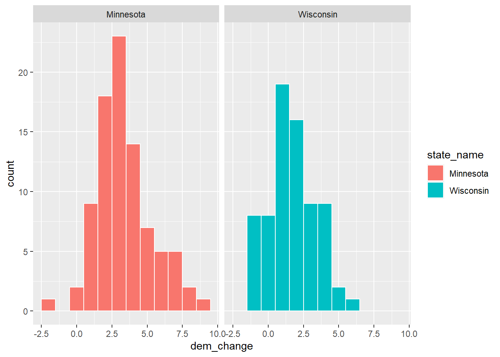
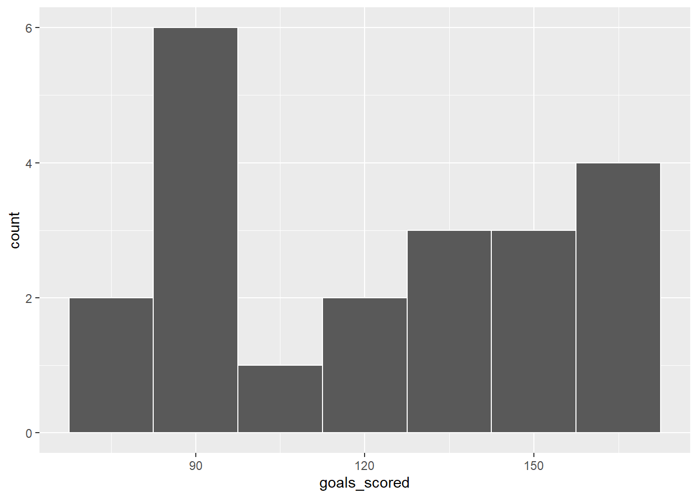
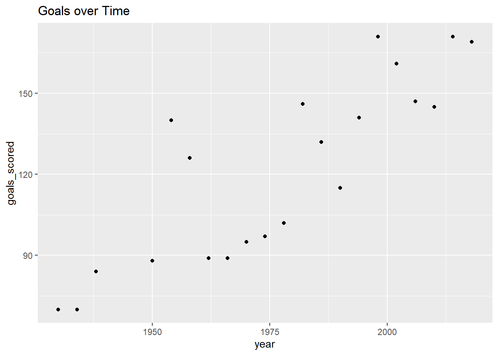
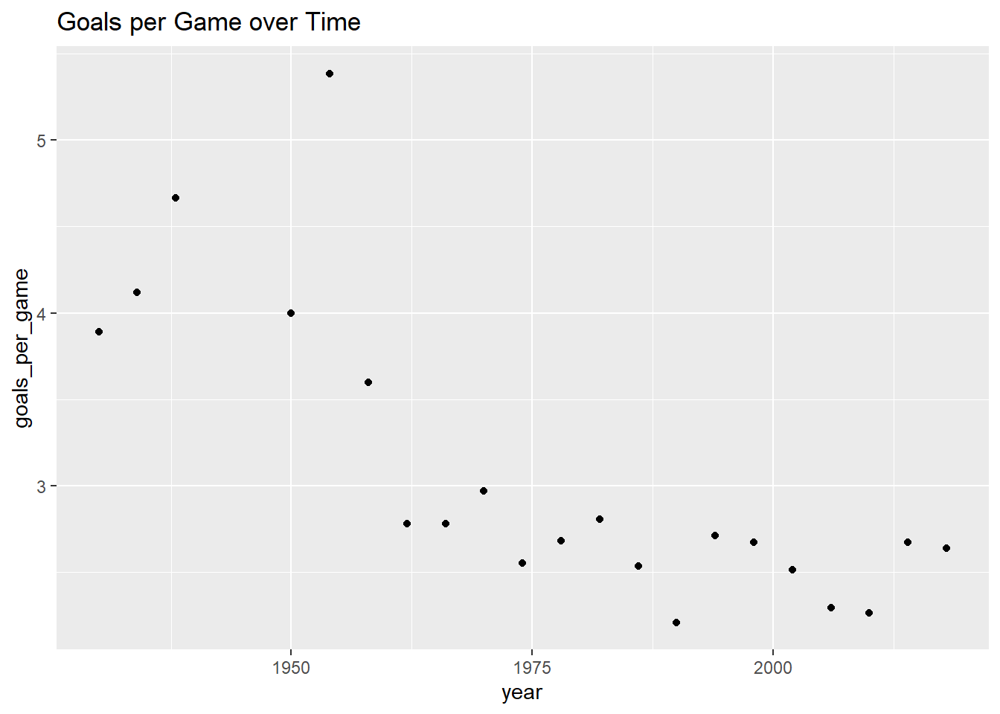

── Attaching core tidyverse packages ──────────────────────── tidyverse 2.0.0 ──
✔ dplyr 1.1.4 ✔ readr 2.1.5
✔ forcats 1.0.0 ✔ stringr 1.5.1
✔ ggplot2 3.5.1 ✔ tibble 3.2.1
✔ lubridate 1.9.4 ✔ tidyr 1.3.1
✔ purrr 1.0.2
── Conflicts ────────────────────────────────────────── tidyverse_conflicts() ──
✖ dplyr::filter() masks stats::filter()
✖ dplyr::lag() masks stats::lag()
ℹ Use the conflicted package (<http://conflicted.r-lib.org/>) to force all conflicts to become errors
# What's the first argument? The second?# first argument: dataset# second argument: relevant columnsselect(elections, c(state_name, county_name, dem_pct_20, dem_pct_16))
state_name county_name dem_pct_20 dem_pct_16
1 Alabama Autauga County 27.02 23.96
2 Alabama Baldwin County 22.41 19.57
3 Alabama Barbour County 45.79 46.66
4 Alabama Bibb County 20.70 21.42
5 Alabama Blount County 9.57 8.47
6 Alabama Bullock County 74.70 75.09
7 Alabama Butler County 41.79 42.79
8 Alabama Calhoun County 29.85 27.86
9 Alabama Chambers County 41.64 41.83
10 Alabama Cherokee County 13.20 14.51
11 Alabama Chilton County 15.91 15.94
12 Alabama Choctaw County 41.89 42.78
13 Alabama Clarke County 43.81 44.16
14 Alabama Clay County 18.28 18.78
15 Alabama Cleburne County 9.34 10.47
16 Alabama Coffee County 22.79 20.45
17 Alabama Colbert County 29.92 29.63
18 Alabama Conecuh County 46.05 46.91
19 Alabama Coosa County 32.78 34.08
20 Alabama Covington County 15.61 15.04
21 Alabama Crenshaw County 25.69 26.60
22 Alabama Cullman County 10.70 10.01
23 Alabama Dale County 26.19 23.68
24 Alabama Dallas County 68.46 68.48
25 Alabama DeKalb County 14.58 14.11
26 Alabama Elmore County 25.27 22.86
27 Alabama Escambia County 30.91 30.88
28 Alabama Etowah County 24.24 23.81
29 Alabama Fayette County 15.91 16.57
30 Alabama Franklin County 16.58 18.38
31 Alabama Geneva County 12.71 13.05
32 Alabama Greene County 81.34 82.39
33 Alabama Hale County 59.16 59.58
34 Alabama Henry County 28.03 28.51
35 Alabama Houston County 27.98 25.09
36 Alabama Jackson County 15.73 17.62
37 Alabama Jefferson County 55.76 52.25
38 Alabama Lamar County 13.60 14.93
39 Alabama Lauderdale County 26.87 25.45
40 Alabama Lawrence County 22.22 24.69
41 Alabama Lee County 38.99 36.39
42 Alabama Limestone County 27.77 23.71
43 Alabama Lowndes County 72.74 73.13
44 Alabama Macon County 81.49 82.73
45 Alabama Madison County 44.82 39.15
46 Alabama Marengo County 50.35 51.21
47 Alabama Marion County 10.60 11.09
48 Alabama Marshall County 14.99 14.05
49 Alabama Mobile County 43.39 41.88
50 Alabama Monroe County 41.76 42.32
51 Alabama Montgomery County 65.09 62.04
52 Alabama Morgan County 24.63 22.44
53 Alabama Perry County 73.80 72.75
54 Alabama Pickens County 41.60 41.84
55 Alabama Pike County 40.72 38.69
56 Alabama Randolph County 20.33 22.61
57 Alabama Russell County 52.64 50.05
58 Alabama St. Clair County 17.43 14.63
59 Alabama Shelby County 28.94 23.11
60 Alabama Sumter County 73.88 74.15
61 Alabama Talladega County 36.84 36.45
62 Alabama Tallapoosa County 27.91 28.49
63 Alabama Tuscaloosa County 41.88 38.85
64 Alabama Walker County 15.51 15.34
65 Alabama Washington County 25.44 27.86
66 Alabama Wilcox County 68.58 71.03
67 Alabama Winston County 8.63 8.49
68 Arizona Apache County 66.21 65.36
69 Arizona Cochise County 39.24 35.44
70 Arizona Coconino County 60.94 56.33
71 Arizona Gila County 32.31 31.53
72 Arizona Graham County 26.90 27.65
73 Arizona Greenlee County 32.05 33.67
74 Arizona La Paz County 29.97 26.73
75 Arizona Maricopa County 50.29 45.68
76 Arizona Mohave County 23.72 22.22
77 Arizona Navajo County 45.16 43.38
78 Arizona Pima County 58.57 54.23
79 Arizona Pinal County 40.59 38.10
80 Arizona Santa Cruz County 67.16 71.58
81 Arizona Yavapai County 34.62 32.02
82 Arizona Yuma County 46.06 44.99
83 Arkansas Arkansas County 28.89 31.44
84 Arkansas Ashley County 26.81 30.00
85 Arkansas Baxter County 22.06 21.27
86 Arkansas Benton County 35.23 29.59
87 Arkansas Boone County 17.90 18.38
88 Arkansas Bradley County 33.22 36.41
89 Arkansas Calhoun County 21.95 28.27
90 Arkansas Carroll County 34.10 31.29
91 Arkansas Chicot County 55.08 56.64
92 Arkansas Clark County 40.95 43.11
93 Arkansas Clay County 18.56 33.44
94 Arkansas Cleburne County 15.68 17.56
95 Arkansas Cleveland County 18.08 21.92
96 Arkansas Columbia County 32.66 35.53
97 Arkansas Conway County 30.11 33.88
98 Arkansas Craighead County 30.95 29.95
99 Arkansas Crawford County 20.58 20.20
100 Arkansas Crittenden County 52.02 52.97
101 Arkansas Cross County 25.53 29.21
102 Arkansas Dallas County 36.35 42.50
103 Arkansas Desha County 48.41 52.70
104 Arkansas Drew County 35.12 36.08
105 Arkansas Faulkner County 33.71 31.33
106 Arkansas Franklin County 18.24 20.54
107 Arkansas Fulton County 20.22 22.49
108 Arkansas Garland County 31.78 30.45
109 Arkansas Grant County 15.46 20.53
110 Arkansas Greene County 18.99 21.19
111 Arkansas Hempstead County 31.22 33.95
112 Arkansas Hot Spring County 24.54 26.55
113 Arkansas Howard County 27.72 29.13
114 Arkansas Independence County 19.34 21.41
115 Arkansas Izard County 17.57 20.59
116 Arkansas Jackson County 26.81 31.08
117 Arkansas Jefferson County 59.55 61.21
118 Arkansas Johnson County 24.04 26.91
119 Arkansas Lafayette County 31.32 36.26
120 Arkansas Lawrence County 18.44 22.44
121 Arkansas Lee County 49.96 57.76
122 Arkansas Lincoln County 26.63 32.83
123 Arkansas Little River County 23.68 26.91
124 Arkansas Logan County 18.77 21.84
125 Arkansas Lonoke County 21.81 21.06
126 Arkansas Madison County 21.26 23.40
127 Arkansas Marion County 20.41 20.50
128 Arkansas Miller County 25.68 26.68
129 Arkansas Mississippi County 36.93 43.26
130 Arkansas Monroe County 40.73 46.93
131 Arkansas Montgomery County 18.87 21.34
132 Arkansas Nevada County 32.04 35.76
133 Arkansas Newton County 17.73 18.73
134 Arkansas Ouachita County 41.49 43.72
135 Arkansas Perry County 21.87 24.57
136 Arkansas Phillips County 58.04 62.26
137 Arkansas Pike County 15.17 17.29
138 Arkansas Poinsett County 18.93 35.55
139 Arkansas Polk County 14.68 14.90
140 Arkansas Pope County 23.62 22.36
141 Arkansas Prairie County 18.71 23.85
142 Arkansas Pulaski County 59.98 56.67
143 Arkansas Randolph County 17.84 22.57
144 Arkansas St. Francis County 50.70 54.38
145 Arkansas Saline County 28.20 25.49
146 Arkansas Scott County 13.60 16.80
147 Arkansas Searcy County 14.63 16.25
148 Arkansas Sebastian County 30.73 27.97
149 Arkansas Sevier County 21.45 23.80
150 Arkansas Sharp County 18.48 20.47
151 Arkansas Stone County 19.87 21.51
152 Arkansas Union County 33.62 34.69
153 Arkansas Van Buren County 20.40 21.76
154 Arkansas Washington County 46.49 41.32
155 Arkansas White County 19.36 18.79
156 Arkansas Woodruff County 34.57 43.80
157 Arkansas Yell County 19.05 23.04
158 California Alameda County 80.23 79.31
159 California Alpine County 64.24 55.30
160 California Amador County 36.56 34.35
161 California Butte County 49.42 44.03
162 California Calaveras County 36.98 34.65
163 California Colusa County 40.67 40.32
164 California Contra Costa County 71.64 68.91
165 California Del Norte County 40.84 37.23
166 California El Dorado County 44.45 39.50
167 California Fresno County 52.91 49.41
168 California Glenn County 35.38 32.68
169 California Humboldt County 65.04 58.26
170 California Imperial County 61.14 68.18
171 California Inyo County 48.88 39.46
172 California Kern County 43.69 39.72
173 California Kings County 42.64 40.01
174 California Lake County 51.88 47.83
175 California Lassen County 23.35 21.34
176 California Los Angeles County 71.04 71.41
177 California Madera County 43.13 38.77
178 California Marin County 82.34 78.82
179 California Mariposa County 39.77 35.17
180 California Mendocino County 66.42 60.38
181 California Merced County 54.11 51.40
182 California Modoc County 26.51 23.76
183 California Mono County 59.57 52.31
184 California Monterey County 69.53 66.96
185 California Napa County 69.07 64.77
186 California Nevada County 56.16 48.71
187 California Orange County 53.49 50.96
188 California Placer County 45.47 41.17
189 California Plumas County 40.52 36.51
190 California Riverside County 53.00 49.61
191 California Sacramento County 61.37 58.56
192 California San Benito County 61.16 57.19
193 California San Bernardino County 54.21 52.19
194 California San Diego County 60.23 56.07
195 California San Francisco County 85.27 85.53
196 California San Joaquin County 55.86 53.88
197 California San Luis Obispo County 55.30 50.57
198 California San Mateo County 77.89 76.38
199 California Santa Barbara County 64.89 60.97
200 California Santa Clara County 72.66 73.35
201 California Santa Cruz County 78.90 75.05
202 California Shasta County 32.29 28.21
203 California Sierra County 37.82 33.31
204 California Siskiyou County 40.91 35.82
205 California Solano County 63.95 62.25
206 California Sonoma County 74.53 70.72
207 California Stanislaus County 49.26 47.35
208 California Sutter County 40.73 38.88
209 California Tehama County 31.03 28.73
210 California Trinity County 45.56 39.78
211 California Tulare County 45.02 41.34
212 California Tuolumne County 39.40 36.55
213 California Ventura County 59.47 55.37
214 California Yolo County 69.50 68.07
215 California Yuba County 37.70 34.35
216 Colorado Adams County 56.69 49.38
217 Colorado Alamosa County 48.14 45.93
218 Colorado Arapahoe County 61.00 52.68
219 Colorado Archuleta County 40.88 34.14
220 Colorado Baca County 14.25 13.19
221 Colorado Bent County 32.19 30.71
222 Colorado Boulder County 77.19 70.57
223 Colorado Broomfield County 62.35 52.30
224 Colorado Chaffee County 52.20 43.39
225 Colorado Cheyenne County 11.53 11.80
226 Colorado Clear Creek County 55.04 46.73
227 Colorado Conejos County 45.21 44.16
228 Colorado Costilla County 62.61 60.93
229 Colorado Crowley County 24.97 22.24
230 Colorado Custer County 30.60 26.01
231 Colorado Delta County 30.39 24.30
232 Colorado Denver County 79.55 75.17
233 Colorado Dolores County 23.53 18.46
234 Colorado Douglas County 45.19 36.65
235 Colorado Eagle County 63.79 55.96
236 Colorado Elbert County 23.65 19.48
237 Colorado El Paso County 42.75 33.77
238 Colorado Fremont County 28.83 24.11
239 Colorado Garfield County 49.92 42.56
240 Colorado Gilpin County 53.11 45.72
241 Colorado Grand County 47.72 38.99
242 Colorado Gunnison County 63.74 54.50
243 Colorado Hinsdale County 40.35 33.45
244 Colorado Huerfano County 47.12 43.24
245 Colorado Jackson County 19.98 19.84
246 Colorado Jefferson County 57.88 49.07
247 Colorado Kiowa County 10.85 10.67
248 Colorado Kit Carson County 17.10 14.56
249 Colorado Lake County 58.14 50.39
250 Colorado La Plata County 57.61 49.80
251 Colorado Larimer County 56.22 47.54
252 Colorado Las Animas County 43.93 39.06
253 Colorado Lincoln County 17.73 16.61
254 Colorado Logan County 21.06 19.00
255 Colorado Mesa County 34.80 27.99
256 Colorado Mineral County 41.93 36.35
257 Colorado Moffat County 17.12 13.43
258 Colorado Montezuma County 37.65 30.85
259 Colorado Montrose County 30.84 25.81
260 Colorado Morgan County 28.20 26.31
261 Colorado Otero County 37.65 34.12
262 Colorado Ouray County 58.83 51.41
263 Colorado Park County 39.89 32.71
264 Colorado Phillips County 19.56 18.70
265 Colorado Pitkin County 75.18 69.69
266 Colorado Prowers County 26.22 23.56
267 Colorado Pueblo County 49.57 46.49
268 Colorado Rio Blanco County 15.20 12.60
269 Colorado Rio Grande County 39.57 36.17
270 Colorado Routt County 62.70 54.36
271 Colorado Saguache County 55.59 49.69
272 Colorado San Juan County 60.75 52.37
273 Colorado San Miguel County 76.24 68.66
274 Colorado Sedgwick County 20.82 19.57
275 Colorado Summit County 68.35 59.16
276 Colorado Teller County 31.16 24.97
277 Colorado Washington County 12.27 10.67
278 Colorado Weld County 39.56 34.28
279 Colorado Yuma County 15.76 15.03
280 Connecticut Fairfield County 62.90 58.19
281 Connecticut Hartford County 63.06 58.56
282 Connecticut Litchfield County 46.65 40.89
283 Connecticut Middlesex County 57.30 51.25
284 Connecticut New Haven County 58.05 54.16
285 Connecticut New London County 56.92 50.55
286 Connecticut Tolland County 54.63 49.89
287 Connecticut Windham County 46.78 42.95
288 Delaware Kent County 51.19 44.91
289 Delaware New Castle County 67.81 62.30
290 Delaware Sussex County 43.82 37.17
291 District of Columbia District of Columbia 92.15 92.85
292 Florida Alachua County 62.90 58.96
293 Florida Baker County 14.49 16.72
294 Florida Bay County 27.53 24.89
295 Florida Bradford County 23.18 24.17
296 Florida Brevard County 41.18 38.02
297 Florida Broward County 64.61 66.47
298 Florida Calhoun County 18.53 20.37
299 Florida Charlotte County 36.34 34.70
300 Florida Citrus County 29.07 28.60
301 Florida Clay County 30.80 26.11
302 Florida Collier County 37.35 35.74
303 Florida Columbia County 26.98 26.48
304 Florida DeSoto County 33.64 34.95
305 Florida Dixie County 16.71 17.63
306 Florida Duval County 51.25 47.49
307 Florida Escambia County 41.63 37.67
308 Florida Flagler County 39.27 38.29
309 Florida Franklin County 30.95 28.95
310 Florida Gadsden County 67.98 67.91
311 Florida Gilchrist County 17.55 17.31
312 Florida Glades County 26.67 29.18
313 Florida Gulf County 24.32 23.56
314 Florida Hamilton County 33.67 34.84
315 Florida Hardee County 27.08 28.34
316 Florida Hendry County 38.09 41.51
317 Florida Hernando County 34.45 33.89
318 Florida Highlands County 32.47 32.69
319 Florida Hillsborough County 52.86 51.49
320 Florida Holmes County 10.19 10.02
321 Florida Indian River County 38.82 36.29
322 Florida Jackson County 30.18 30.40
323 Florida Jefferson County 46.11 46.29
324 Florida Lafayette County 13.94 15.26
325 Florida Lake County 39.52 36.84
326 Florida Lee County 40.03 38.28
327 Florida Leon County 63.54 60.51
328 Florida Levy County 26.81 26.29
329 Florida Liberty County 19.49 19.76
330 Florida Madison County 39.95 41.47
331 Florida Manatee County 41.56 39.81
332 Florida Marion County 36.63 35.51
333 Florida Martin County 37.37 35.17
334 Florida Miami-Dade County 53.41 63.66
335 Florida Monroe County 45.56 44.66
336 Florida Nassau County 26.46 23.31
337 Florida Okaloosa County 29.43 23.56
338 Florida Okeechobee County 27.52 29.00
339 Florida Orange County 61.02 60.38
340 Florida Osceola County 56.42 60.93
341 Florida Palm Beach County 56.08 56.51
342 Florida Pasco County 39.43 37.37
343 Florida Pinellas County 49.57 47.47
344 Florida Polk County 42.26 41.29
345 Florida Putnam County 28.94 30.38
346 Florida St. Johns County 36.15 31.55
347 Florida St. Lucie County 48.87 47.47
348 Florida Santa Rosa County 25.82 21.04
349 Florida Sarasota County 44.39 42.74
350 Florida Seminole County 50.81 47.07
351 Florida Sumter County 31.73 29.53
352 Florida Suwannee County 21.30 21.18
353 Florida Taylor County 22.70 23.16
354 Florida Union County 16.86 17.81
355 Florida Volusia County 42.47 41.79
356 Florida Wakulla County 29.08 28.34
357 Florida Walton County 23.65 20.44
358 Florida Washington County 19.04 20.29
359 Georgia Appling County 21.26 20.48
360 Georgia Atkinson County 26.15 26.73
361 Georgia Bacon County 13.39 15.14
362 Georgia Baker County 41.93 45.14
363 Georgia Baldwin County 50.08 49.55
364 Georgia Banks County 10.59 9.85
365 Georgia Barrow County 27.57 22.83
366 Georgia Bartow County 23.96 20.89
367 Georgia Ben Hill County 36.46 35.42
368 Georgia Berrien County 16.39 15.86
369 Georgia Bibb County 61.39 58.95
370 Georgia Bleckley County 22.99 22.17
371 Georgia Brantley County 9.03 9.85
372 Georgia Brooks County 39.30 39.95
373 Georgia Bryan County 31.58 26.62
374 Georgia Bulloch County 37.38 36.49
375 Georgia Burke County 48.75 50.59
376 Georgia Butts County 27.81 27.08
377 Georgia Calhoun County 57.46 58.23
378 Georgia Camden County 33.64 31.42
379 Georgia Candler County 28.64 27.23
380 Georgia Carroll County 29.81 28.40
381 Georgia Catoosa County 21.27 17.99
382 Georgia Charlton County 24.19 25.05
383 Georgia Chatham County 58.65 55.65
384 Georgia Chattahoochee County 42.16 42.85
385 Georgia Chattooga County 18.45 19.55
386 Georgia Cherokee County 29.54 22.74
387 Georgia Clarke County 70.22 66.74
388 Georgia Clay County 55.12 54.84
389 Georgia Clayton County 84.99 85.06
390 Georgia Clinch County 26.00 28.04
391 Georgia Cobb County 56.35 48.84
392 Georgia Coffee County 29.65 29.43
393 Georgia Colquitt County 26.05 25.46
394 Georgia Columbia County 36.28 29.39
395 Georgia Cook County 29.27 29.02
396 Georgia Coweta County 31.52 27.03
397 Georgia Crawford County 26.47 27.52
398 Georgia Crisp County 37.12 37.80
399 Georgia Dade County 16.96 15.47
400 Georgia Dawson County 15.46 12.36
401 Georgia Decatur County 41.14 40.09
402 Georgia DeKalb County 83.12 80.82
403 Georgia Dodge County 26.91 26.25
404 Georgia Dooly County 46.55 48.49
405 Georgia Dougherty County 69.62 68.46
406 Georgia Douglas County 61.95 53.99
407 Georgia Early County 47.22 45.27
408 Georgia Echols County 11.59 13.28
409 Georgia Effingham County 24.45 20.74
410 Georgia Elbert County 31.39 31.69
411 Georgia Emanuel County 30.36 31.04
412 Georgia Evans County 31.17 31.37
413 Georgia Fannin County 17.31 16.32
414 Georgia Fayette County 45.92 38.51
415 Georgia Floyd County 28.83 26.65
416 Georgia Forsyth County 32.64 24.07
417 Georgia Franklin County 14.80 14.67
418 Georgia Fulton County 72.59 69.23
419 Georgia Gilmer County 17.74 15.38
420 Georgia Glascock County 9.90 9.93
421 Georgia Glynn County 37.83 34.48
422 Georgia Gordon County 18.24 16.85
423 Georgia Grady County 33.80 32.71
424 Georgia Greene County 36.35 36.17
425 Georgia Gwinnett County 58.45 50.96
426 Georgia Habersham County 17.43 15.40
427 Georgia Hall County 27.65 23.03
428 Georgia Hancock County 71.66 75.45
429 Georgia Haralson County 12.57 13.02
430 Georgia Harris County 27.30 24.90
431 Georgia Hart County 24.80 25.63
432 Georgia Heard County 15.28 17.67
433 Georgia Henry County 59.71 50.90
434 Georgia Houston County 43.08 37.71
435 Georgia Irwin County 24.18 24.32
436 Georgia Jackson County 20.28 16.52
437 Georgia Jasper County 23.04 25.66
438 Georgia Jeff Davis County 17.81 17.70
439 Georgia Jefferson County 53.12 54.93
440 Georgia Jenkins County 36.64 36.52
441 Georgia Johnson County 29.80 30.85
442 Georgia Jones County 32.69 31.62
443 Georgia Lamar County 28.97 29.93
444 Georgia Lanier County 28.50 28.14
445 Georgia Laurens County 35.52 34.64
446 Georgia Lee County 27.27 22.44
447 Georgia Liberty County 61.25 59.27
448 Georgia Lincoln County 30.86 31.00
449 Georgia Long County 35.97 33.00
450 Georgia Lowndes County 43.40 39.70
451 Georgia Lumpkin County 20.13 17.98
452 Georgia McDuffie County 39.87 39.91
453 Georgia McIntosh County 39.01 39.00
454 Georgia Macon County 61.29 63.10
455 Georgia Madison County 22.84 20.28
456 Georgia Marion County 36.19 38.11
457 Georgia Meriwether County 39.41 41.39
458 Georgia Miller County 26.39 24.49
459 Georgia Mitchell County 44.55 44.44
460 Georgia Monroe County 28.13 28.17
461 Georgia Montgomery County 24.70 23.79
462 Georgia Morgan County 28.64 28.17
463 Georgia Murray County 14.95 14.48
464 Georgia Muscogee County 61.41 57.97
465 Georgia Newton County 54.93 50.10
466 Georgia Oconee County 32.43 27.60
467 Georgia Oglethorpe County 29.99 27.50
468 Georgia Paulding County 34.78 27.87
469 Georgia Peach County 47.18 47.51
470 Georgia Pickens County 16.45 14.14
471 Georgia Pierce County 12.16 12.37
472 Georgia Pike County 14.04 14.28
473 Georgia Polk County 21.02 20.22
474 Georgia Pulaski County 30.14 30.68
475 Georgia Putnam County 29.08 29.11
476 Georgia Quitman County 44.94 44.16
477 Georgia Rabun County 20.74 18.15
478 Georgia Randolph County 54.38 55.16
479 Georgia Richmond County 67.95 64.98
480 Georgia Rockdale County 69.91 61.74
481 Georgia Schley County 20.31 21.01
482 Georgia Screven County 40.15 40.36
483 Georgia Seminole County 32.30 33.16
484 Georgia Spalding County 39.15 36.03
485 Georgia Stephens County 20.08 18.80
486 Georgia Stewart County 59.40 59.43
487 Georgia Sumter County 51.98 50.31
488 Georgia Talbot County 60.02 61.70
489 Georgia Taliaferro County 60.45 60.76
490 Georgia Tattnall County 25.19 24.39
491 Georgia Taylor County 36.13 38.07
492 Georgia Telfair County 34.33 34.61
493 Georgia Terrell County 53.80 54.25
494 Georgia Thomas County 39.81 38.11
495 Georgia Tift County 32.67 30.42
496 Georgia Toombs County 26.92 25.67
497 Georgia Towns County 19.43 17.93
498 Georgia Treutlen County 30.94 31.85
499 Georgia Troup County 38.53 37.21
500 Georgia Turner County 37.17 36.67
501 Georgia Twiggs County 45.99 48.61
502 Georgia Union County 18.00 16.30
503 Georgia Upson County 32.57 31.77
504 Georgia Walker County 19.66 17.60
505 Georgia Walton County 24.82 20.48
506 Georgia Ware County 29.38 28.28
507 Georgia Warren County 55.40 56.30
508 Georgia Washington County 50.05 49.72
509 Georgia Wayne County 21.03 19.65
510 Georgia Webster County 46.01 42.28
511 Georgia Wheeler County 30.15 30.73
512 Georgia White County 16.27 14.20
513 Georgia Whitfield County 29.05 26.10
514 Georgia Wilcox County 26.26 28.66
515 Georgia Wilkes County 42.94 41.25
516 Georgia Wilkinson County 43.48 44.27
517 Georgia Worth County 25.79 24.38
518 Hawaii Hawaii County 66.88 63.61
519 Hawaii Honolulu County 62.51 61.48
520 Hawaii Kauai County 63.36 62.49
521 Hawaii Maui County 66.59 64.45
522 Idaho Ada County 46.47 38.69
523 Idaho Adams County 22.85 19.01
524 Idaho Bannock County 37.12 30.96
525 Idaho Bear Lake County 10.56 8.71
526 Idaho Benewah County 19.65 18.61
527 Idaho Bingham County 20.52 17.59
528 Idaho Blaine County 67.12 59.83
529 Idaho Boise County 24.98 20.38
530 Idaho Bonner County 30.38 30.57
531 Idaho Bonneville County 26.40 20.20
532 Idaho Boundary County 19.33 18.12
533 Idaho Butte County 13.29 13.01
534 Idaho Camas County 19.76 18.36
535 Idaho Canyon County 28.62 23.17
536 Idaho Caribou County 12.62 8.93
537 Idaho Cassia County 15.20 12.67
538 Idaho Clark County 13.18 15.55
539 Idaho Clearwater County 19.85 18.52
540 Idaho Custer County 22.02 17.70
541 Idaho Elmore County 25.49 21.29
542 Idaho Franklin County 9.86 7.00
543 Idaho Fremont County 14.85 11.39
544 Idaho Gem County 18.11 15.46
545 Idaho Gooding County 20.76 17.92
546 Idaho Idaho County 16.26 14.54
547 Idaho Jefferson County 11.72 8.51
548 Idaho Jerome County 24.23 19.85
549 Idaho Kootenai County 27.05 24.54
550 Idaho Latah County 49.76 44.60
551 Idaho Lemhi County 21.78 18.02
552 Idaho Lewis County 18.66 16.98
553 Idaho Lincoln County 21.34 20.59
554 Idaho Madison County 15.58 7.66
555 Idaho Minidoka County 19.39 16.99
556 Idaho Nez Perce County 31.89 28.08
557 Idaho Oneida County 10.16 8.90
558 Idaho Owyhee County 17.21 15.08
559 Idaho Payette County 19.14 15.64
560 Idaho Power County 28.03 25.34
561 Idaho Shoshone County 27.99 27.03
562 Idaho Teton County 52.28 43.44
563 Idaho Twin Falls County 25.60 21.46
564 Idaho Valley County 42.14 35.76
565 Idaho Washington County 20.08 17.42
566 Illinois Adams County 25.75 24.03
567 Illinois Alexander County 42.44 44.75
568 Illinois Bond County 28.09 27.69
569 Illinois Boone County 42.20 39.60
570 Illinois Brown County 19.25 20.33
571 Illinois Bureau County 38.25 36.86
572 Illinois Calhoun County 24.41 28.91
573 Illinois Carroll County 34.25 33.14
574 Illinois Cass County 30.32 31.99
575 Illinois Champaign County 59.71 55.71
576 Illinois Christian County 26.75 26.01
577 Illinois Clark County 23.85 23.95
578 Illinois Clay County 16.36 16.15
579 Illinois Clinton County 23.38 22.81
580 Illinois Coles County 35.69 33.76
581 Illinois Cook County 74.35 74.38
582 Illinois Crawford County 23.32 23.15
583 Illinois Cumberland County 19.52 18.65
584 Illinois DeKalb County 51.35 47.76
585 Illinois De Witt County 27.31 25.53
586 Illinois Douglas County 26.66 24.06
587 Illinois DuPage County 57.98 53.88
588 Illinois Edgar County 23.02 22.84
589 Illinois Edwards County 14.49 13.04
590 Illinois Effingham County 19.47 17.62
591 Illinois Fayette County 18.12 19.06
592 Illinois Ford County 25.18 22.42
593 Illinois Franklin County 25.50 25.42
594 Illinois Fulton County 38.88 39.20
595 Illinois Gallatin County 23.25 24.38
596 Illinois Greene County 21.66 21.69
597 Illinois Grundy County 35.98 35.04
598 Illinois Hamilton County 19.06 19.31
599 Illinois Hancock County 24.67 22.31
600 Illinois Hardin County 20.77 19.64
601 Illinois Henderson County 32.47 33.07
602 Illinois Henry County 38.12 36.46
603 Illinois Iroquois County 20.71 19.31
604 Illinois Jackson County 49.22 47.41
605 Illinois Jasper County 18.03 18.10
606 Illinois Jefferson County 26.43 26.21
607 Illinois Jersey County 24.76 24.50
608 Illinois Jo Daviess County 40.89 39.83
609 Illinois Johnson County 19.86 18.86
610 Illinois Kane County 56.14 51.36
611 Illinois Kankakee County 40.51 40.61
612 Illinois Kendall County 51.66 46.03
613 Illinois Knox County 46.12 45.25
614 Illinois Lake County 61.06 57.29
615 Illinois LaSalle County 41.80 39.79
616 Illinois Lawrence County 22.10 21.33
617 Illinois Lee County 38.97 36.14
618 Illinois Livingston County 26.87 26.53
619 Illinois Logan County 28.89 27.21
620 Illinois McDonough County 40.63 40.88
621 Illinois McHenry County 47.49 42.69
622 Illinois McLean County 50.27 45.47
623 Illinois Macon County 40.19 38.51
624 Illinois Macoupin County 30.60 29.85
625 Illinois Madison County 42.04 39.36
626 Illinois Marion County 25.86 25.49
627 Illinois Marshall County 31.60 30.22
628 Illinois Mason County 29.34 31.21
629 Illinois Massac County 25.30 23.44
630 Illinois Menard County 29.08 28.15
631 Illinois Mercer County 36.80 36.37
632 Illinois Monroe County 30.98 28.95
633 Illinois Montgomery County 28.38 27.20
634 Illinois Morgan County 33.11 32.13
635 Illinois Moultrie County 24.64 23.77
636 Illinois Ogle County 35.79 33.72
637 Illinois Peoria County 51.90 48.33
638 Illinois Perry County 25.94 25.07
639 Illinois Piatt County 33.79 29.59
640 Illinois Pike County 18.63 18.93
641 Illinois Pope County 19.91 17.54
642 Illinois Pulaski County 33.87 33.04
643 Illinois Putnam County 39.47 37.16
644 Illinois Randolph County 24.09 24.38
645 Illinois Richland County 22.70 20.69
646 Illinois Rock Island County 54.91 51.23
647 Illinois St. Clair County 53.34 50.49
648 Illinois Saline County 25.15 22.71
649 Illinois Sangamon County 46.70 42.22
650 Illinois Schuyler County 27.26 28.32
651 Illinois Scott County 20.87 20.44
652 Illinois Shelby County 20.70 20.89
653 Illinois Stark County 28.24 27.63
654 Illinois Stephenson County 41.07 38.57
655 Illinois Tazewell County 35.94 32.47
656 Illinois Union County 28.96 28.06
657 Illinois Vermilion County 32.62 33.14
658 Illinois Wabash County 22.35 21.21
659 Illinois Warren County 39.00 38.74
660 Illinois Washington County 20.72 19.60
661 Illinois Wayne County 13.97 12.69
662 Illinois White County 20.41 19.37
663 Illinois Whiteside County 44.76 43.65
664 Illinois Will County 53.11 50.25
665 Illinois Williamson County 30.26 27.18
666 Illinois Winnebago County 50.16 46.53
667 Illinois Woodford County 28.65 26.14
668 Indiana Adams County 22.77 21.49
669 Indiana Allen County 43.29 37.88
670 Indiana Bartholomew County 35.69 30.38
671 Indiana Benton County 24.53 23.54
672 Indiana Blackford County 25.72 25.78
673 Indiana Boone County 39.57 31.76
674 Indiana Brown County 33.80 31.84
675 Indiana Carroll County 23.42 21.97
676 Indiana Cass County 28.32 26.59
677 Indiana Clark County 39.91 36.77
678 Indiana Clay County 20.80 20.48
679 Indiana Clinton County 25.96 23.70
680 Indiana Crawford County 27.41 28.82
681 Indiana Daviess County 18.14 16.77
682 Indiana Dearborn County 21.46 20.42
683 Indiana Decatur County 19.85 19.12
684 Indiana DeKalb County 25.30 23.44
685 Indiana Delaware County 42.49 40.49
686 Indiana Dubois County 28.90 27.06
687 Indiana Elkhart County 35.10 31.70
688 Indiana Fayette County 22.07 23.63
689 Indiana Floyd County 41.89 37.45
690 Indiana Fountain County 20.40 19.75
691 Indiana Franklin County 17.81 17.90
692 Indiana Fulton County 24.93 23.41
693 Indiana Gibson County 24.89 24.04
694 Indiana Grant County 29.51 27.85
695 Indiana Greene County 22.92 21.28
696 Indiana Hamilton County 45.56 37.24
697 Indiana Hancock County 30.05 24.71
698 Indiana Harrison County 26.40 25.78
699 Indiana Hendricks County 36.84 30.02
700 Indiana Henry County 26.36 25.52
701 Indiana Howard County 32.74 30.51
702 Indiana Huntington County 23.87 21.95
703 Indiana Jackson County 22.36 21.92
704 Indiana Jasper County 24.54 24.97
705 Indiana Jay County 22.76 23.73
706 Indiana Jefferson County 32.19 32.13
707 Indiana Jennings County 20.59 21.27
708 Indiana Johnson County 31.87 26.15
709 Indiana Knox County 25.40 24.36
710 Indiana Kosciusko County 23.37 19.78
711 Indiana LaGrange County 22.15 21.78
712 Indiana Lake County 56.77 58.38
713 Indiana LaPorte County 45.41 43.99
714 Indiana Lawrence County 23.60 22.07
715 Indiana Madison County 37.70 34.65
716 Indiana Marion County 63.59 58.90
717 Indiana Marshall County 28.66 26.64
718 Indiana Martin County 19.65 18.33
719 Indiana Miami County 22.35 20.58
720 Indiana Monroe County 63.12 59.32
721 Indiana Montgomery County 24.50 22.26
722 Indiana Morgan County 21.52 19.36
723 Indiana Newton County 22.89 24.23
724 Indiana Noble County 24.28 23.11
725 Indiana Ohio County 23.70 23.52
726 Indiana Orange County 25.18 25.01
727 Indiana Owen County 24.43 22.84
728 Indiana Parke County 21.44 21.91
729 Indiana Perry County 36.72 38.16
730 Indiana Pike County 22.75 21.70
731 Indiana Porter County 45.94 43.84
732 Indiana Posey County 28.79 28.24
733 Indiana Pulaski County 25.20 24.41
734 Indiana Putnam County 23.78 22.86
735 Indiana Randolph County 22.70 23.39
736 Indiana Ripley County 19.44 19.32
737 Indiana Rush County 22.11 21.14
738 Indiana St. Joseph County 51.98 47.74
739 Indiana Scott County 26.55 29.16
740 Indiana Shelby County 25.13 23.68
741 Indiana Spencer County 29.84 28.73
742 Indiana Starke County 25.75 26.98
743 Indiana Steuben County 27.92 25.75
744 Indiana Sullivan County 23.94 24.69
745 Indiana Switzerland County 23.21 25.56
746 Indiana Tippecanoe County 49.01 43.94
747 Indiana Tipton County 22.60 21.13
748 Indiana Union County 21.13 21.76
749 Indiana Vanderburgh County 44.31 39.32
750 Indiana Vermillion County 28.67 30.10
751 Indiana Vigo County 41.57 40.24
752 Indiana Wabash County 23.98 22.50
753 Indiana Warren County 21.78 21.41
754 Indiana Warrick County 35.24 30.69
755 Indiana Washington County 22.93 23.26
756 Indiana Wayne County 34.41 32.54
757 Indiana Wells County 20.84 19.70
758 Indiana White County 27.15 25.88
759 Indiana Whitley County 24.12 21.75
760 Iowa Adair County 28.68 29.98
761 Iowa Adams County 27.31 27.14
762 Iowa Allamakee County 34.71 35.23
763 Iowa Appanoose County 29.02 29.74
764 Iowa Audubon County 31.32 31.93
765 Iowa Benton County 35.24 34.13
766 Iowa Black Hawk County 53.53 50.63
767 Iowa Boone County 41.09 39.45
768 Iowa Bremer County 40.96 40.07
769 Iowa Buchanan County 38.70 39.12
770 Iowa Buena Vista County 36.26 34.86
771 Iowa Butler County 29.93 29.01
772 Iowa Calhoun County 27.96 27.35
773 Iowa Carroll County 30.47 31.67
774 Iowa Cass County 30.25 27.58
775 Iowa Cedar County 40.52 38.12
776 Iowa Cerro Gordo County 45.97 43.48
777 Iowa Cherokee County 29.70 27.09
778 Iowa Chickasaw County 33.68 35.56
779 Iowa Clarke County 31.39 33.21
780 Iowa Clay County 29.68 26.29
781 Iowa Clayton County 34.81 35.57
782 Iowa Clinton County 43.80 44.31
783 Iowa Crawford County 31.03 28.93
784 Iowa Dallas County 47.98 41.64
785 Iowa Davis County 24.70 25.30
786 Iowa Decatur County 29.44 32.43
787 Iowa Delaware County 31.56 32.25
788 Iowa Des Moines County 44.56 43.70
789 Iowa Dickinson County 32.56 29.77
790 Iowa Dubuque County 47.58 46.44
791 Iowa Emmet County 31.32 28.81
792 Iowa Fayette County 37.65 37.36
793 Iowa Floyd County 39.49 39.79
794 Iowa Franklin County 31.70 30.32
795 Iowa Fremont County 28.00 26.98
796 Iowa Greene County 34.98 35.45
797 Iowa Grundy County 30.32 27.30
798 Iowa Guthrie County 31.16 30.42
799 Iowa Hamilton County 35.79 35.78
800 Iowa Hancock County 27.27 27.21
801 Iowa Hardin County 33.11 32.93
802 Iowa Harrison County 29.92 28.77
803 Iowa Henry County 32.81 31.20
804 Iowa Howard County 35.74 37.14
805 Iowa Humboldt County 27.07 24.86
806 Iowa Ida County 23.82 22.06
807 Iowa Iowa County 36.41 34.93
808 Iowa Jackson County 36.18 37.60
809 Iowa Jasper County 38.33 37.86
810 Iowa Jefferson County 48.21 46.27
811 Iowa Johnson County 70.57 66.03
812 Iowa Jones County 38.34 37.75
813 Iowa Keokuk County 26.66 26.04
814 Iowa Kossuth County 29.66 29.74
815 Iowa Lee County 39.09 38.98
816 Iowa Linn County 55.61 51.00
817 Iowa Louisa County 32.37 33.24
818 Iowa Lucas County 27.73 28.76
819 Iowa Lyon County 15.55 14.47
820 Iowa Madison County 31.90 31.28
821 Iowa Mahaska County 25.38 24.83
822 Iowa Marion County 32.12 31.16
823 Iowa Marshall County 45.08 43.07
824 Iowa Mills County 30.33 27.34
825 Iowa Mitchell County 35.26 35.06
826 Iowa Monona County 29.76 27.49
827 Iowa Monroe County 26.37 27.39
828 Iowa Montgomery County 29.72 26.25
829 Iowa Muscatine County 45.34 43.40
830 Iowa O'Brien County 20.78 17.88
831 Iowa Osceola County 18.06 17.27
832 Iowa Page County 27.71 25.85
833 Iowa Palo Alto County 30.64 29.85
834 Iowa Plymouth County 24.63 22.04
835 Iowa Pocahontas County 24.40 25.11
836 Iowa Polk County 56.52 52.39
837 Iowa Pottawattamie County 40.61 36.33
838 Iowa Poweshiek County 42.47 44.07
839 Iowa Ringgold County 26.12 28.06
840 Iowa Sac County 25.09 24.60
841 Iowa Scott County 50.68 47.48
842 Iowa Shelby County 28.83 26.30
843 Iowa Sioux County 15.85 12.72
844 Iowa Story County 57.16 51.29
845 Iowa Tama County 39.53 36.98
846 Iowa Taylor County 22.96 25.14
847 Iowa Union County 33.32 33.29
848 Iowa Van Buren County 23.08 23.91
849 Iowa Wapello County 37.24 37.28
850 Iowa Warren County 40.51 38.53
851 Iowa Washington County 38.77 36.38
852 Iowa Wayne County 23.38 24.61
853 Iowa Webster County 37.11 36.50
854 Iowa Winnebago County 35.76 33.58
855 Iowa Winneshiek County 46.56 46.70
856 Iowa Woodbury County 41.23 37.50
857 Iowa Worth County 36.12 36.12
858 Iowa Wright County 31.92 31.77
859 Kansas Allen County 26.69 26.31
860 Kansas Anderson County 20.56 20.29
861 Kansas Atchison County 31.65 30.44
862 Kansas Barber County 12.28 12.72
863 Kansas Barton County 21.00 18.07
864 Kansas Bourbon County 22.98 22.07
865 Kansas Brown County 24.75 21.46
866 Kansas Butler County 28.18 23.99
867 Kansas Chase County 23.07 23.32
868 Kansas Chautauqua County 12.97 12.79
869 Kansas Cherokee County 24.18 23.36
870 Kansas Cheyenne County 15.71 13.34
871 Kansas Clark County 13.65 12.00
872 Kansas Clay County 21.36 17.84
873 Kansas Cloud County 21.39 19.42
874 Kansas Coffey County 20.86 18.15
875 Kansas Comanche County 13.94 11.90
876 Kansas Cowley County 29.98 28.23
877 Kansas Crawford County 36.96 35.16
878 Kansas Decatur County 14.27 12.19
879 Kansas Dickinson County 22.06 19.76
880 Kansas Doniphan County 18.45 17.35
881 Kansas Douglas County 68.54 62.39
882 Kansas Edwards County 18.90 15.90
883 Kansas Elk County 14.18 12.71
884 Kansas Ellis County 26.91 22.89
885 Kansas Ellsworth County 23.02 19.61
886 Kansas Finney County 36.24 30.89
887 Kansas Ford County 33.06 27.37
888 Kansas Franklin County 29.58 26.54
889 Kansas Geary County 41.08 36.04
890 Kansas Gove County 11.37 11.22
891 Kansas Graham County 17.05 14.62
892 Kansas Grant County 20.27 18.48
893 Kansas Gray County 15.04 12.78
894 Kansas Greeley County 12.24 12.99
895 Kansas Greenwood County 18.55 17.22
896 Kansas Hamilton County 16.01 13.46
897 Kansas Harper County 17.25 15.44
898 Kansas Harvey County 39.05 34.43
899 Kansas Haskell County 18.87 17.54
900 Kansas Hodgeman County 14.62 12.33
901 Kansas Jackson County 28.63 26.00
902 Kansas Jefferson County 32.42 30.46
903 Kansas Jewell County 13.12 12.14
904 Kansas Johnson County 52.74 45.16
905 Kansas Kearny County 18.05 16.91
906 Kansas Kingman County 18.96 18.10
907 Kansas Kiowa County 13.43 10.85
908 Kansas Labette County 30.98 28.21
909 Kansas Lane County 12.84 12.52
910 Kansas Leavenworth County 38.08 33.91
911 Kansas Lincoln County 16.94 14.78
912 Kansas Linn County 17.60 16.85
913 Kansas Logan County 12.87 11.05
914 Kansas Lyon County 43.15 37.94
915 Kansas McPherson County 28.68 25.58
916 Kansas Marion County 24.51 21.54
917 Kansas Marshall County 24.67 23.15
918 Kansas Meade County 14.44 12.30
919 Kansas Miami County 29.13 26.84
920 Kansas Mitchell County 18.00 16.61
921 Kansas Montgomery County 23.88 22.00
922 Kansas Morris County 25.31 22.82
923 Kansas Morton County 12.64 12.50
924 Kansas Nemaha County 16.36 14.21
925 Kansas Neosho County 26.05 23.80
926 Kansas Ness County 9.89 11.15
927 Kansas Norton County 15.10 12.65
928 Kansas Osage County 26.59 25.09
929 Kansas Osborne County 14.48 13.18
930 Kansas Ottawa County 15.95 14.79
931 Kansas Pawnee County 23.41 21.79
932 Kansas Phillips County 11.56 11.34
933 Kansas Pottawatomie County 25.42 21.15
934 Kansas Pratt County 22.50 20.20
935 Kansas Rawlins County 14.30 11.05
936 Kansas Reno County 31.57 28.45
937 Kansas Republic County 15.89 14.90
938 Kansas Rice County 22.53 18.73
939 Kansas Riley County 50.05 43.43
940 Kansas Rooks County 12.48 11.48
941 Kansas Rush County 16.65 15.40
942 Kansas Russell County 17.24 14.42
943 Kansas Saline County 33.55 28.69
944 Kansas Scott County 12.49 10.75
945 Kansas Sedgwick County 42.53 36.91
946 Kansas Seward County 34.05 31.44
947 Kansas Shawnee County 49.95 45.17
948 Kansas Sheridan County 10.31 9.25
949 Kansas Sherman County 14.44 13.40
950 Kansas Smith County 15.68 14.65
951 Kansas Stafford County 17.60 16.08
952 Kansas Stanton County 19.17 17.79
953 Kansas Stevens County 11.67 11.60
954 Kansas Sumner County 23.67 21.48
955 Kansas Thomas County 16.39 13.41
956 Kansas Trego County 14.85 13.23
957 Kansas Wabaunsee County 24.76 23.14
958 Kansas Wallace County 5.39 5.78
959 Kansas Washington County 16.43 14.12
960 Kansas Wichita County 15.30 14.88
961 Kansas Wilson County 18.24 15.80
962 Kansas Woodson County 18.93 19.01
963 Kansas Wyandotte County 64.54 61.82
964 Kentucky Adair County 15.88 16.08
965 Kentucky Allen County 17.54 16.69
966 Kentucky Anderson County 25.26 23.08
967 Kentucky Ballard County 19.53 19.92
968 Kentucky Barren County 25.55 23.14
969 Kentucky Bath County 27.95 29.74
970 Kentucky Bell County 17.81 17.71
971 Kentucky Boone County 31.20 26.11
972 Kentucky Bourbon County 34.16 31.75
973 Kentucky Boyd County 32.56 29.45
974 Kentucky Boyle County 36.59 33.11
975 Kentucky Bracken County 18.84 20.02
976 Kentucky Breathitt County 22.98 26.83
977 Kentucky Breckinridge County 23.04 22.36
978 Kentucky Bullitt County 25.13 22.91
979 Kentucky Butler County 17.62 16.99
980 Kentucky Caldwell County 22.27 21.10
981 Kentucky Calloway County 33.21 29.61
982 Kentucky Campbell County 39.64 34.51
983 Kentucky Carlisle County 17.55 16.62
984 Kentucky Carroll County 26.98 28.72
985 Kentucky Carter County 22.80 22.17
986 Kentucky Casey County 12.80 11.91
987 Kentucky Christian County 34.77 32.57
988 Kentucky Clark County 33.10 29.06
989 Kentucky Clay County 10.95 11.12
990 Kentucky Clinton County 12.23 12.28
991 Kentucky Crittenden County 17.23 15.29
992 Kentucky Cumberland County 15.35 15.00
993 Kentucky Daviess County 35.07 30.96
994 Kentucky Edmonson County 20.01 18.69
995 Kentucky Elliott County 23.77 25.99
996 Kentucky Estill County 20.72 20.01
997 Kentucky Fayette County 59.25 51.26
998 Kentucky Fleming County 20.85 21.57
999 Kentucky Floyd County 23.75 24.30
1000 Kentucky Franklin County 48.53 44.95
1001 Kentucky Fulton County 32.73 32.51
1002 Kentucky Gallatin County 21.36 22.47
1003 Kentucky Garrard County 21.02 19.09
1004 Kentucky Grant County 19.85 20.00
1005 Kentucky Graves County 20.92 19.95
1006 Kentucky Grayson County 20.03 18.54
1007 Kentucky Green County 15.83 15.61
1008 Kentucky Greenup County 26.81 25.49
1009 Kentucky Hancock County 29.45 28.98
1010 Kentucky Hardin County 36.99 32.34
1011 Kentucky Harlan County 13.62 12.77
1012 Kentucky Harrison County 27.09 26.13
1013 Kentucky Hart County 22.80 23.83
1014 Kentucky Henderson County 36.91 34.06
1015 Kentucky Henry County 26.41 25.60
1016 Kentucky Hickman County 20.83 20.82
1017 Kentucky Hopkins County 25.28 21.21
1018 Kentucky Jackson County 9.90 8.77
1019 Kentucky Jefferson County 59.06 54.09
1020 Kentucky Jessamine County 32.60 26.38
1021 Kentucky Johnson County 15.78 13.08
1022 Kentucky Kenton County 39.26 33.67
1023 Kentucky Knott County 22.58 21.63
1024 Kentucky Knox County 15.93 14.67
1025 Kentucky Larue County 20.60 20.10
1026 Kentucky Laurel County 15.92 13.86
1027 Kentucky Lawrence County 17.80 17.31
1028 Kentucky Lee County 17.17 16.67
1029 Kentucky Leslie County 9.27 8.91
1030 Kentucky Letcher County 19.69 16.89
1031 Kentucky Lewis County 13.99 14.83
1032 Kentucky Lincoln County 20.65 19.52
1033 Kentucky Livingston County 18.76 19.11
1034 Kentucky Logan County 25.05 25.28
1035 Kentucky Lyon County 25.83 26.40
1036 Kentucky McCracken County 33.37 29.20
1037 Kentucky McCreary County 11.26 11.50
1038 Kentucky McLean County 22.46 21.64
1039 Kentucky Madison County 35.45 31.60
1040 Kentucky Magoffin County 22.29 22.92
1041 Kentucky Marion County 30.49 33.04
1042 Kentucky Marshall County 23.13 22.02
1043 Kentucky Martin County 10.24 9.19
1044 Kentucky Mason County 29.68 27.32
1045 Kentucky Meade County 25.74 24.76
1046 Kentucky Menifee County 24.18 25.19
1047 Kentucky Mercer County 25.85 22.64
1048 Kentucky Metcalfe County 19.45 21.14
1049 Kentucky Monroe County 12.33 12.04
1050 Kentucky Montgomery County 28.27 27.61
1051 Kentucky Morgan County 21.19 21.11
1052 Kentucky Muhlenberg County 24.90 25.08
1053 Kentucky Nelson County 30.91 30.99
1054 Kentucky Nicholas County 28.12 27.74
1055 Kentucky Ohio County 21.60 20.00
1056 Kentucky Oldham County 38.20 31.27
1057 Kentucky Owen County 20.12 21.25
1058 Kentucky Owsley County 11.39 14.57
1059 Kentucky Pendleton County 19.09 19.38
1060 Kentucky Perry County 22.17 20.22
1061 Kentucky Pike County 19.16 17.36
1062 Kentucky Powell County 24.83 25.69
1063 Kentucky Pulaski County 17.95 15.02
1064 Kentucky Robertson County 22.08 21.92
1065 Kentucky Rockcastle County 14.57 13.69
1066 Kentucky Rowan County 38.55 37.32
1067 Kentucky Russell County 14.86 13.38
1068 Kentucky Scott County 36.48 31.93
1069 Kentucky Shelby County 34.30 30.52
1070 Kentucky Simpson County 30.70 28.50
1071 Kentucky Spencer County 22.13 20.20
1072 Kentucky Taylor County 23.67 22.59
1073 Kentucky Todd County 22.47 21.84
1074 Kentucky Trigg County 24.28 23.55
1075 Kentucky Trimble County 23.43 23.22
1076 Kentucky Union County 23.25 21.44
1077 Kentucky Warren County 40.58 35.04
1078 Kentucky Washington County 26.41 25.26
1079 Kentucky Wayne County 18.40 17.91
1080 Kentucky Webster County 23.56 21.36
1081 Kentucky Whitley County 16.62 15.02
1082 Kentucky Wolfe County 28.16 28.59
1083 Kentucky Woodford County 42.93 36.60
1084 Louisiana Acadia Parish 19.15 20.59
1085 Louisiana Allen Parish 21.49 22.78
1086 Louisiana Ascension Parish 32.73 30.13
1087 Louisiana Assumption Parish 34.12 36.05
1088 Louisiana Avoyelles Parish 28.79 30.35
1089 Louisiana Beauregard Parish 15.54 15.87
1090 Louisiana Bienville Parish 43.50 44.67
1091 Louisiana Bossier Parish 28.66 25.37
1092 Louisiana Caddo Parish 52.53 50.55
1093 Louisiana Calcasieu Parish 31.43 31.39
1094 Louisiana Caldwell Parish 15.64 16.79
1095 Louisiana Cameron Parish 8.02 8.75
1096 Louisiana Catahoula Parish 26.12 27.22
1097 Louisiana Claiborne Parish 41.50 42.31
1098 Louisiana Concordia Parish 35.99 36.89
1099 Louisiana De Soto Parish 37.03 38.25
1100 Louisiana East Baton Rouge Parish 55.52 52.31
1101 Louisiana East Carroll Parish 62.58 62.54
1102 Louisiana East Feliciana Parish 40.73 42.17
1103 Louisiana Evangeline Parish 26.98 28.28
1104 Louisiana Franklin Parish 27.35 27.35
1105 Louisiana Grant Parish 12.32 13.39
1106 Louisiana Iberia Parish 33.71 32.96
1107 Louisiana Iberville Parish 50.92 51.89
1108 Louisiana Jackson Parish 28.08 28.66
1109 Louisiana Jefferson Parish 43.60 40.54
1110 Louisiana Jefferson Davis Parish 21.62 21.57
1111 Louisiana Lafayette Parish 34.65 30.99
1112 Louisiana Lafourche Parish 19.11 20.23
1113 Louisiana Lincoln Parish 39.22 38.05
1114 Louisiana Livingston Parish 14.18 12.05
1115 Louisiana Madison Parish 56.83 57.99
1116 Louisiana Morehouse Parish 42.73 43.49
1117 Louisiana Natchitoches Parish 41.66 42.99
1118 Louisiana Orleans Parish 83.15 80.81
1119 Louisiana Ouachita Parish 37.46 35.92
1120 Louisiana Plaquemines Parish 31.00 31.66
1121 Louisiana Pointe Coupee Parish 37.85 40.51
1122 Louisiana Rapides Parish 33.08 32.23
1123 Louisiana Red River Parish 39.79 43.83
1124 Louisiana Richland Parish 32.44 32.90
1125 Louisiana Sabine Parish 16.34 17.40
1126 Louisiana St. Bernard Parish 34.85 31.36
1127 Louisiana St. Charles Parish 34.37 32.68
1128 Louisiana St. Helena Parish 54.34 56.22
1129 Louisiana St. James Parish 51.71 53.11
1130 Louisiana St. John the Baptist Parish 63.37 61.03
1131 Louisiana St. Landry Parish 42.21 43.05
1132 Louisiana St. Martin Parish 31.21 32.10
1133 Louisiana St. Mary Parish 34.74 35.20
1134 Louisiana St. Tammany Parish 26.94 22.28
1135 Louisiana Tangipahoa Parish 32.76 32.20
1136 Louisiana Tensas Parish 52.04 52.26
1137 Louisiana Terrebonne Parish 24.22 24.30
1138 Louisiana Union Parish 23.69 24.70
1139 Louisiana Vermilion Parish 18.33 18.79
1140 Louisiana Vernon Parish 16.78 16.02
1141 Louisiana Washington Parish 30.59 30.56
1142 Louisiana Webster Parish 33.88 34.50
1143 Louisiana West Baton Rouge Parish 43.98 42.34
1144 Louisiana West Carroll Parish 14.05 15.02
1145 Louisiana West Feliciana Parish 36.66 38.75
1146 Louisiana Winn Parish 24.79 25.80
1147 Maine Androscoggin County 47.04 41.52
1148 Maine Aroostook County 39.04 38.26
1149 Maine Cumberland County 66.45 60.11
1150 Maine Franklin County 46.40 42.74
1151 Maine Hancock County 54.83 50.36
1152 Maine Kennebec County 48.57 44.39
1153 Maine Knox County 58.72 54.04
1154 Maine Lincoln County 53.76 47.78
1155 Maine Oxford County 44.06 39.15
1156 Maine Penobscot County 44.23 40.92
1157 Maine Piscataquis County 35.50 33.88
1158 Maine Sagadahoc County 56.28 49.45
1159 Maine Somerset County 36.98 35.01
1160 Maine Waldo County 50.76 46.14
1161 Maine Washington County 38.95 38.40
1162 Maine York County 54.90 48.99
1163 Maryland Allegany County 29.89 23.97
1164 Maryland Anne Arundel County 55.82 47.78
1165 Maryland Baltimore County 62.28 56.55
1166 Maryland Calvert County 45.99 38.37
1167 Maryland Caroline County 32.26 28.21
1168 Maryland Carroll County 36.34 28.65
1169 Maryland Cecil County 35.42 29.90
1170 Maryland Charles County 69.47 63.55
1171 Maryland Dorchester County 42.92 40.58
1172 Maryland Frederick County 53.34 45.14
1173 Maryland Garrett County 21.02 17.45
1174 Maryland Harford County 42.58 35.26
1175 Maryland Howard County 70.70 64.08
1176 Maryland Kent County 49.37 45.58
1177 Maryland Montgomery County 78.61 75.87
1178 Maryland Prince George's County 89.26 89.33
1179 Maryland Queen Anne's County 35.35 29.70
1180 Maryland St. Mary's County 41.57 34.95
1181 Maryland Somerset County 41.80 39.74
1182 Maryland Talbot County 49.04 41.99
1183 Maryland Washington County 38.42 31.60
1184 Maryland Wicomico County 47.72 42.16
1185 Maryland Worcester County 39.63 34.35
1186 Maryland Baltimore city 87.28 85.44
1187 Massachusetts Barnstable County 61.20 53.99
1188 Massachusetts Berkshire County 72.44 67.50
1189 Massachusetts Bristol County 54.92 51.86
1190 Massachusetts Dukes County 77.47 72.92
1191 Massachusetts Essex County 63.44 58.50
1192 Massachusetts Franklin County 70.73 64.15
1193 Massachusetts Hampden County 57.73 55.10
1194 Massachusetts Hampshire County 72.12 66.29
1195 Massachusetts Middlesex County 71.47 66.32
1196 Massachusetts Nantucket County 71.74 64.71
1197 Massachusetts Norfolk County 67.03 61.25
1198 Massachusetts Plymouth County 57.53 50.66
1199 Massachusetts Suffolk County 80.64 79.47
1200 Massachusetts Worcester County 57.58 51.74
1201 Michigan Alcona County 30.32 28.03
1202 Michigan Alger County 40.04 36.85
1203 Michigan Allegan County 36.44 32.51
1204 Michigan Alpena County 35.36 33.20
1205 Michigan Antrim County 37.37 32.77
1206 Michigan Arenac County 31.41 30.01
1207 Michigan Baraga County 36.60 33.16
1208 Michigan Barry County 32.86 30.10
1209 Michigan Bay County 43.40 40.88
1210 Michigan Benzie County 44.69 40.19
1211 Michigan Berrien County 45.44 41.03
1212 Michigan Branch County 29.99 28.74
1213 Michigan Calhoun County 43.57 41.09
1214 Michigan Cass County 34.83 31.24
1215 Michigan Charlevoix County 40.82 35.26
1216 Michigan Cheboygan County 34.26 31.52
1217 Michigan Chippewa County 37.68 34.85
1218 Michigan Clare County 31.93 31.75
1219 Michigan Clinton County 45.84 40.65
1220 Michigan Crawford County 33.99 30.88
1221 Michigan Delta County 35.96 34.82
1222 Michigan Dickinson County 32.52 29.86
1223 Michigan Eaton County 48.66 44.06
1224 Michigan Emmet County 43.57 37.14
1225 Michigan Genesee County 53.93 52.38
1226 Michigan Gladwin County 30.98 30.42
1227 Michigan Gogebic County 43.19 40.00
1228 Michigan Grand Traverse County 47.62 40.74
1229 Michigan Gratiot County 34.99 34.45
1230 Michigan Hillsdale County 25.25 24.14
1231 Michigan Houghton County 41.89 38.52
1232 Michigan Huron County 29.78 28.89
1233 Michigan Ingham County 65.18 60.88
1234 Michigan Ionia County 33.84 31.13
1235 Michigan Iosco County 34.97 32.54
1236 Michigan Iron County 36.72 33.91
1237 Michigan Isabella County 47.83 45.00
1238 Michigan Jackson County 39.57 37.08
1239 Michigan Kalamazoo County 58.35 53.30
1240 Michigan Kalkaska County 28.24 25.55
1241 Michigan Kent County 52.05 45.24
1242 Michigan Keweenaw County 43.16 36.88
1243 Michigan Lake County 36.19 36.39
1244 Michigan Lapeer County 31.09 28.22
1245 Michigan Leelanau County 52.04 45.90
1246 Michigan Lenawee County 39.19 36.50
1247 Michigan Livingston County 37.91 32.56
1248 Michigan Luce County 28.06 26.44
1249 Michigan Mackinac County 37.52 34.25
1250 Michigan Macomb County 45.31 42.08
1251 Michigan Manistee County 41.67 39.52
1252 Michigan Marquette County 54.63 48.76
1253 Michigan Mason County 39.42 36.03
1254 Michigan Mecosta County 35.04 33.98
1255 Michigan Menominee County 34.23 32.88
1256 Michigan Midland County 41.75 36.94
1257 Michigan Missaukee County 22.47 21.44
1258 Michigan Monroe County 37.84 36.25
1259 Michigan Montcalm County 30.23 29.65
1260 Michigan Montmorency County 27.79 25.68
1261 Michigan Muskegon County 49.37 47.51
1262 Michigan Newaygo County 28.99 27.48
1263 Michigan Oakland County 56.36 51.71
1264 Michigan Oceana County 35.16 33.38
1265 Michigan Ogemaw County 29.18 29.17
1266 Michigan Ontonagon County 36.57 34.36
1267 Michigan Osceola County 26.07 25.53
1268 Michigan Oscoda County 27.53 25.70
1269 Michigan Otsego County 32.14 28.38
1270 Michigan Ottawa County 38.35 31.83
1271 Michigan Presque Isle County 34.89 33.26
1272 Michigan Roscommon County 34.40 32.89
1273 Michigan Saginaw County 49.43 47.13
1274 Michigan St. Clair County 34.07 31.48
1275 Michigan St. Joseph County 33.15 31.68
1276 Michigan Sanilac County 26.58 25.32
1277 Michigan Schoolcraft County 33.49 32.98
1278 Michigan Shiawassee County 39.13 36.86
1279 Michigan Tuscola County 29.59 28.65
1280 Michigan Van Buren County 43.01 39.92
1281 Michigan Washtenaw County 72.61 68.39
1282 Michigan Wayne County 68.45 66.78
1283 Michigan Wexford County 31.96 29.03
1284 Minnesota Aitkin County 35.98 34.12
1285 Minnesota Anoka County 47.79 41.01
1286 Minnesota Becker County 33.96 30.47
1287 Minnesota Beltrami County 47.24 40.76
1288 Minnesota Benton County 32.70 28.33
1289 Minnesota Big Stone County 35.41 33.75
1290 Minnesota Blue Earth County 50.84 43.38
1291 Minnesota Brown County 32.48 27.54
1292 Minnesota Carlton County 49.58 46.85
1293 Minnesota Carver County 46.37 39.03
1294 Minnesota Cass County 34.68 31.16
1295 Minnesota Chippewa County 33.67 32.00
1296 Minnesota Chisago County 34.15 30.92
1297 Minnesota Clay County 50.74 44.57
1298 Minnesota Clearwater County 26.76 26.04
1299 Minnesota Cook County 65.58 56.90
1300 Minnesota Cottonwood County 30.03 29.45
1301 Minnesota Crow Wing County 34.17 30.88
1302 Minnesota Dakota County 55.73 48.22
1303 Minnesota Dodge County 33.47 29.36
1304 Minnesota Douglas County 32.56 28.80
1305 Minnesota Faribault County 31.98 29.27
1306 Minnesota Fillmore County 37.48 35.28
1307 Minnesota Freeborn County 40.96 37.92
1308 Minnesota Goodhue County 41.23 36.99
1309 Minnesota Grant County 35.58 31.97
1310 Minnesota Hennepin County 70.46 63.82
1311 Minnesota Houston County 42.42 39.42
1312 Minnesota Hubbard County 34.42 30.04
1313 Minnesota Isanti County 29.45 27.09
1314 Minnesota Itasca County 40.61 38.12
1315 Minnesota Jackson County 29.99 27.36
1316 Minnesota Kanabec County 30.02 28.64
1317 Minnesota Kandiyohi County 36.12 33.56
1318 Minnesota Kittson County 38.12 34.83
1319 Minnesota Koochiching County 38.41 36.53
1320 Minnesota Lac qui Parle County 35.79 33.92
1321 Minnesota Lake County 50.64 47.54
1322 Minnesota Lake of the Woods County 27.87 24.80
1323 Minnesota Le Sueur County 33.73 31.10
1324 Minnesota Lincoln County 30.08 28.65
1325 Minnesota Lyon County 35.94 31.54
1326 Minnesota McLeod County 30.64 26.64
1327 Minnesota Mahnomen County 48.26 44.84
1328 Minnesota Marshall County 25.33 25.55
1329 Minnesota Martin County 30.02 26.11
1330 Minnesota Meeker County 28.58 26.17
1331 Minnesota Mille Lacs County 29.98 28.65
1332 Minnesota Morrison County 22.33 20.74
1333 Minnesota Mower County 46.00 42.33
1334 Minnesota Murray County 29.60 27.90
1335 Minnesota Nicollet County 50.31 44.02
1336 Minnesota Nobles County 33.65 31.81
1337 Minnesota Norman County 40.80 39.11
1338 Minnesota Olmsted County 54.16 45.75
1339 Minnesota Otter Tail County 32.85 28.93
1340 Minnesota Pennington County 35.29 32.17
1341 Minnesota Pine County 33.87 33.36
1342 Minnesota Pipestone County 26.44 23.58
1343 Minnesota Polk County 34.88 32.06
1344 Minnesota Pope County 35.27 33.46
1345 Minnesota Ramsey County 71.50 65.73
1346 Minnesota Red Lake County 31.47 28.86
1347 Minnesota Redwood County 28.43 24.94
1348 Minnesota Renville County 30.71 27.99
1349 Minnesota Rice County 48.76 44.81
1350 Minnesota Rock County 29.69 28.56
1351 Minnesota Roseau County 25.98 23.90
1352 Minnesota St. Louis County 56.64 51.92
1353 Minnesota Scott County 45.52 38.31
1354 Minnesota Sherburne County 32.48 27.74
1355 Minnesota Sibley County 28.60 25.29
1356 Minnesota Stearns County 37.58 32.38
1357 Minnesota Steele County 37.47 32.77
1358 Minnesota Stevens County 37.80 39.55
1359 Minnesota Swift County 34.35 33.80
1360 Minnesota Todd County 24.79 23.30
1361 Minnesota Traverse County 35.46 35.23
1362 Minnesota Wabasha County 35.78 32.86
1363 Minnesota Wadena County 26.35 24.43
1364 Minnesota Waseca County 33.65 29.63
1365 Minnesota Washington County 53.46 46.96
1366 Minnesota Watonwan County 38.20 36.49
1367 Minnesota Wilkin County 29.91 27.23
1368 Minnesota Winona County 49.07 43.97
1369 Minnesota Wright County 34.49 29.41
1370 Minnesota Yellow Medicine County 30.54 29.01
1371 Mississippi Adams County 57.54 56.66
1372 Mississippi Alcorn County 17.60 18.16
1373 Mississippi Amite County 36.35 38.22
1374 Mississippi Attala County 40.10 39.31
1375 Mississippi Benton County 39.12 42.87
1376 Mississippi Bolivar County 64.73 65.54
1377 Mississippi Calhoun County 28.84 29.72
1378 Mississippi Carroll County 30.31 30.13
1379 Mississippi Chickasaw County 46.76 46.25
1380 Mississippi Choctaw County 28.05 29.80
1381 Mississippi Claiborne County 84.71 85.41
1382 Mississippi Clarke County 34.00 33.14
1383 Mississippi Clay County 57.26 57.18
1384 Mississippi Coahoma County 70.77 71.57
1385 Mississippi Copiah County 50.17 52.10
1386 Mississippi Covington County 36.45 37.17
1387 Mississippi DeSoto County 37.07 31.07
1388 Mississippi Forrest County 43.36 41.31
1389 Mississippi Franklin County 33.15 34.87
1390 Mississippi George County 11.01 10.30
1391 Mississippi Greene County 16.61 17.95
1392 Mississippi Grenada County 43.36 42.00
1393 Mississippi Hancock County 21.49 18.95
1394 Mississippi Harrison County 36.55 33.31
1395 Mississippi Hinds County 73.41 70.93
1396 Mississippi Holmes County 81.18 82.61
1397 Mississippi Humphreys County 72.00 73.69
1398 Mississippi Issaquena County 52.51 56.51
1399 Mississippi Itawamba County 11.54 11.42
1400 Mississippi Jackson County 31.81 28.78
1401 Mississippi Jasper County 49.66 51.57
1402 Mississippi Jefferson County 85.07 86.47
1403 Mississippi Jefferson Davis County 57.93 59.64
1404 Mississippi Jones County 28.30 27.43
1405 Mississippi Kemper County 61.01 60.94
1406 Mississippi Lafayette County 42.89 40.57
1407 Mississippi Lamar County 25.73 20.86
1408 Mississippi Lauderdale County 41.45 37.66
1409 Mississippi Lawrence County 34.15 34.46
1410 Mississippi Leake County 42.34 42.43
1411 Mississippi Lee County 32.94 30.13
1412 Mississippi Leflore County 70.21 69.80
1413 Mississippi Lincoln County 29.97 29.34
1414 Mississippi Lowndes County 47.99 45.92
1415 Mississippi Madison County 43.38 40.75
1416 Mississippi Marion County 31.06 31.22
1417 Mississippi Marshall County 50.90 54.05
1418 Mississippi Monroe County 34.00 34.76
1419 Mississippi Montgomery County 41.77 42.65
1420 Mississippi Neshoba County 27.82 25.56
1421 Mississippi Newton County 30.18 29.66
1422 Mississippi Noxubee County 75.64 78.19
1423 Mississippi Oktibbeha County 51.98 48.61
1424 Mississippi Panola County 47.35 49.15
1425 Mississippi Pearl River County 17.24 15.45
1426 Mississippi Perry County 23.00 22.46
1427 Mississippi Pike County 49.80 48.85
1428 Mississippi Pontotoc County 18.18 17.97
1429 Mississippi Prentiss County 20.20 20.94
1430 Mississippi Quitman County 66.58 68.68
1431 Mississippi Rankin County 26.67 22.40
1432 Mississippi Scott County 40.30 40.53
1433 Mississippi Sharkey County 67.11 66.98
1434 Mississippi Simpson County 34.15 33.91
1435 Mississippi Smith County 21.51 21.15
1436 Mississippi Stone County 22.87 21.98
1437 Mississippi Sunflower County 70.03 69.74
1438 Mississippi Tallahatchie County 54.56 56.85
1439 Mississippi Tate County 31.93 33.40
1440 Mississippi Tippah County 19.17 19.77
1441 Mississippi Tishomingo County 11.58 11.91
1442 Mississippi Tunica County 72.37 74.42
1443 Mississippi Union County 17.03 17.31
1444 Mississippi Walthall County 39.81 41.89
1445 Mississippi Warren County 49.59 46.58
1446 Mississippi Washington County 69.36 67.58
1447 Mississippi Wayne County 36.01 36.64
1448 Mississippi Webster County 19.31 19.92
1449 Mississippi Wilkinson County 66.56 67.70
1450 Mississippi Winston County 43.70 43.07
1451 Mississippi Yalobusha County 42.60 42.49
1452 Mississippi Yazoo County 52.64 52.78
1453 Missouri Adair County 35.89 34.48
1454 Missouri Andrew County 24.11 22.37
1455 Missouri Atchison County 20.04 19.87
1456 Missouri Audrain County 25.38 25.56
1457 Missouri Barry County 18.90 18.56
1458 Missouri Barton County 13.89 13.40
1459 Missouri Bates County 19.87 20.16
1460 Missouri Benton County 20.81 21.12
1461 Missouri Bollinger County 12.54 12.44
1462 Missouri Boone County 54.91 49.30
1463 Missouri Buchanan County 36.74 33.77
1464 Missouri Butler County 18.20 17.62
1465 Missouri Caldwell County 19.16 19.42
1466 Missouri Callaway County 27.76 26.08
1467 Missouri Camden County 22.78 21.22
1468 Missouri Cape Girardeau County 26.68 22.96
1469 Missouri Carroll County 17.34 17.08
1470 Missouri Carter County 14.43 15.34
1471 Missouri Cass County 33.19 29.21
1472 Missouri Cedar County 16.25 16.09
1473 Missouri Chariton County 22.47 22.41
1474 Missouri Christian County 23.76 20.55
1475 Missouri Clark County 19.98 21.83
1476 Missouri Clay County 46.93 41.36
1477 Missouri Clinton County 26.60 25.22
1478 Missouri Cole County 32.11 29.27
1479 Missouri Cooper County 25.87 24.22
1480 Missouri Crawford County 19.26 18.39
1481 Missouri Dade County 15.93 16.12
1482 Missouri Dallas County 17.03 17.08
1483 Missouri Daviess County 19.07 19.79
1484 Missouri DeKalb County 19.20 17.95
1485 Missouri Dent County 14.79 14.43
1486 Missouri Douglas County 14.51 14.77
1487 Missouri Dunklin County 21.12 22.32
1488 Missouri Franklin County 27.14 24.66
1489 Missouri Gasconade County 20.21 20.41
1490 Missouri Gentry County 18.94 19.95
1491 Missouri Greene County 38.83 33.23
1492 Missouri Grundy County 18.01 17.68
1493 Missouri Harrison County 15.60 15.59
1494 Missouri Henry County 24.28 23.91
1495 Missouri Hickory County 20.79 21.54
1496 Missouri Holt County 14.43 14.74
1497 Missouri Howard County 27.75 26.37
1498 Missouri Howell County 17.25 16.54
1499 Missouri Iron County 20.58 21.90
1500 Missouri Jackson County 60.00 55.68
1501 Missouri Jasper County 25.88 21.93
1502 Missouri Jefferson County 32.16 29.77
1503 Missouri Johnson County 30.16 28.09
1504 Missouri Knox County 18.34 20.30
1505 Missouri Laclede County 16.55 15.93
1506 Missouri Lafayette County 26.22 25.59
1507 Missouri Lawrence County 17.95 17.38
1508 Missouri Lewis County 21.35 20.96
1509 Missouri Lincoln County 22.77 22.37
1510 Missouri Linn County 22.27 22.24
1511 Missouri Livingston County 20.86 19.74
1512 Missouri McDonald County 15.90 16.14
1513 Missouri Macon County 21.21 20.03
1514 Missouri Madison County 17.95 18.90
1515 Missouri Maries County 17.06 17.65
1516 Missouri Marion County 23.99 23.20
1517 Missouri Mercer County 12.48 12.42
1518 Missouri Miller County 16.46 15.33
1519 Missouri Mississippi County 24.77 28.23
1520 Missouri Moniteau County 18.28 18.17
1521 Missouri Monroe County 20.88 20.57
1522 Missouri Montgomery County 20.93 20.61
1523 Missouri Morgan County 20.28 20.06
1524 Missouri New Madrid County 24.11 26.29
1525 Missouri Newton County 20.48 18.82
1526 Missouri Nodaway County 28.84 26.79
1527 Missouri Oregon County 17.37 18.55
1528 Missouri Osage County 13.76 14.10
1529 Missouri Ozark County 15.46 16.09
1530 Missouri Pemiscot County 27.20 32.30
1531 Missouri Perry County 17.61 17.41
1532 Missouri Pettis County 25.05 23.95
1533 Missouri Phelps County 28.81 25.74
1534 Missouri Pike County 22.31 24.49
1535 Missouri Platte County 47.46 40.55
1536 Missouri Polk County 19.15 19.18
1537 Missouri Pulaski County 25.95 21.71
1538 Missouri Putnam County 15.29 15.03
1539 Missouri Ralls County 21.28 21.61
1540 Missouri Randolph County 23.13 22.15
1541 Missouri Ray County 26.69 28.50
1542 Missouri Reynolds County 16.04 17.81
1543 Missouri Ripley County 14.57 15.04
1544 Missouri St. Charles County 40.33 34.20
1545 Missouri St. Clair County 19.86 20.22
1546 Missouri Ste. Genevieve County 28.61 30.03
1547 Missouri St. Francois County 25.16 25.29
1548 Missouri St. Louis County 61.17 55.78
1549 Missouri Saline County 30.51 30.15
1550 Missouri Schuyler County 18.62 18.31
1551 Missouri Scotland County 19.56 18.55
1552 Missouri Scott County 21.18 20.73
1553 Missouri Shannon County 18.07 19.88
1554 Missouri Shelby County 17.67 18.63
1555 Missouri Stoddard County 13.55 14.11
1556 Missouri Stone County 18.97 17.45
1557 Missouri Sullivan County 19.34 21.18
1558 Missouri Taney County 20.31 18.66
1559 Missouri Texas County 15.17 15.80
1560 Missouri Vernon County 20.72 19.89
1561 Missouri Warren County 25.95 24.83
1562 Missouri Washington County 18.08 20.76
1563 Missouri Wayne County 14.38 16.49
1564 Missouri Webster County 19.03 19.01
1565 Missouri Worth County 19.42 18.64
1566 Missouri Wright County 13.37 14.42
1567 Missouri St. Louis city 82.24 79.66
1568 Montana Beaverhead County 28.40 23.85
1569 Montana Big Horn County 52.07 49.69
1570 Montana Blaine County 50.98 45.29
1571 Montana Broadwater County 20.38 18.28
1572 Montana Carbon County 34.09 30.80
1573 Montana Carter County 8.56 9.01
1574 Montana Cascade County 38.75 35.67
1575 Montana Chouteau County 33.32 28.35
1576 Montana Custer County 25.74 22.78
1577 Montana Daniels County 19.23 17.54
1578 Montana Dawson County 19.89 18.29
1579 Montana Deer Lodge County 52.38 49.23
1580 Montana Fallon County 10.92 10.45
1581 Montana Fergus County 22.91 20.68
1582 Montana Flathead County 33.65 28.68
1583 Montana Gallatin County 51.80 45.77
1584 Montana Garfield County 5.04 4.76
1585 Montana Glacier County 64.02 61.90
1586 Montana Golden Valley County 15.51 15.17
1587 Montana Granite County 30.35 26.62
1588 Montana Hill County 41.51 37.03
1589 Montana Jefferson County 32.05 30.22
1590 Montana Judith Basin County 20.46 19.51
1591 Montana Lake County 41.60 36.46
1592 Montana Lewis and Clark County 46.47 42.53
1593 Montana Liberty County 22.99 21.60
1594 Montana Lincoln County 24.13 22.05
1595 Montana McCone County 13.74 14.58
1596 Montana Madison County 28.97 24.96
1597 Montana Meagher County 23.24 19.69
1598 Montana Mineral County 26.77 26.09
1599 Montana Missoula County 60.23 53.67
1600 Montana Musselshell County 14.34 13.77
1601 Montana Park County 45.45 38.88
1602 Montana Petroleum County 11.11 9.40
1603 Montana Phillips County 17.44 14.67
1604 Montana Pondera County 30.15 27.38
1605 Montana Powder River County 13.56 12.13
1606 Montana Powell County 23.54 19.83
1607 Montana Prairie County 16.94 14.58
1608 Montana Ravalli County 30.74 27.95
1609 Montana Richland County 15.09 13.90
1610 Montana Roosevelt County 47.42 43.14
1611 Montana Rosebud County 31.69 28.87
1612 Montana Sanders County 23.78 20.63
1613 Montana Sheridan County 28.28 26.08
1614 Montana Silver Bow County 55.20 53.00
1615 Montana Stillwater County 20.14 18.77
1616 Montana Sweet Grass County 22.44 19.16
1617 Montana Teton County 27.25 25.55
1618 Montana Toole County 22.00 19.77
1619 Montana Treasure County 16.96 13.38
1620 Montana Valley County 24.11 22.95
1621 Montana Wheatland County 21.07 19.21
1622 Montana Wibaux County 12.88 10.32
1623 Montana Yellowstone County 36.60 32.65
1624 Nebraska Adams County 28.75 24.84
1625 Nebraska Antelope County 12.62 11.83
1626 Nebraska Arthur County 7.37 6.08
1627 Nebraska Banner County 10.46 4.62
1628 Nebraska Blaine County 11.04 9.58
1629 Nebraska Boone County 15.47 14.44
1630 Nebraska Box Butte County 20.21 20.02
1631 Nebraska Boyd County 11.69 11.21
1632 Nebraska Brown County 11.34 9.69
1633 Nebraska Buffalo County 26.78 22.90
1634 Nebraska Burt County 28.43 26.34
1635 Nebraska Butler County 19.32 17.63
1636 Nebraska Cass County 30.91 27.45
1637 Nebraska Cedar County 14.46 13.12
1638 Nebraska Chase County 11.30 9.24
1639 Nebraska Cherry County 11.41 10.29
1640 Nebraska Cheyenne County 17.90 15.36
1641 Nebraska Clay County 17.70 15.81
1642 Nebraska Colfax County 27.51 27.02
1643 Nebraska Cuming County 19.51 17.85
1644 Nebraska Custer County 13.08 11.57
1645 Nebraska Dakota County 40.25 40.01
1646 Nebraska Dawes County 26.07 21.94
1647 Nebraska Dawson County 27.17 24.94
1648 Nebraska Deuel County 13.64 12.28
1649 Nebraska Dixon County 21.04 20.26
1650 Nebraska Dodge County 32.73 29.75
1651 Nebraska Douglas County 54.37 47.92
1652 Nebraska Dundy County 10.47 9.38
1653 Nebraska Fillmore County 22.01 21.19
1654 Nebraska Franklin County 15.97 15.10
1655 Nebraska Frontier County 13.07 12.29
1656 Nebraska Furnas County 15.33 13.13
1657 Nebraska Gage County 30.44 29.73
1658 Nebraska Garden County 13.42 14.39
1659 Nebraska Garfield County 12.36 12.50
1660 Nebraska Gosper County 19.18 16.50
1661 Nebraska Grant County 4.98 5.08
1662 Nebraska Greeley County 18.19 18.03
1663 Nebraska Hall County 31.42 28.79
1664 Nebraska Hamilton County 20.09 17.81
1665 Nebraska Harlan County 14.58 13.84
1666 Nebraska Hayes County 6.34 5.88
1667 Nebraska Hitchcock County 11.90 10.97
1668 Nebraska Holt County 12.36 10.48
1669 Nebraska Hooker County 13.35 9.66
1670 Nebraska Howard County 18.46 18.39
1671 Nebraska Jefferson County 27.24 24.23
1672 Nebraska Johnson County 28.97 27.30
1673 Nebraska Kearney County 19.38 16.96
1674 Nebraska Keith County 17.46 14.20
1675 Nebraska Keya Paha County 9.25 7.59
1676 Nebraska Kimball County 14.28 13.88
1677 Nebraska Knox County 19.22 17.61
1678 Nebraska Lancaster County 52.34 46.63
1679 Nebraska Lincoln County 21.51 18.36
1680 Nebraska Logan County 8.44 7.10
1681 Nebraska Loup County 16.52 12.57
1682 Nebraska McPherson County 5.63 4.90
1683 Nebraska Madison County 21.99 19.08
1684 Nebraska Merrick County 17.35 16.21
1685 Nebraska Morrill County 15.09 13.02
1686 Nebraska Nance County 19.60 17.51
1687 Nebraska Nemaha County 26.84 25.21
1688 Nebraska Nuckolls County 17.74 16.16
1689 Nebraska Otoe County 29.80 27.71
1690 Nebraska Pawnee County 22.53 21.23
1691 Nebraska Perkins County 12.88 11.28
1692 Nebraska Phelps County 14.98 12.39
1693 Nebraska Pierce County 11.96 10.67
1694 Nebraska Platte County 20.74 18.59
1695 Nebraska Polk County 18.36 16.19
1696 Nebraska Red Willow County 14.83 12.61
1697 Nebraska Richardson County 24.09 21.77
1698 Nebraska Rock County 9.98 8.83
1699 Nebraska Saline County 34.36 33.99
1700 Nebraska Sarpy County 42.84 35.62
1701 Nebraska Saunders County 26.05 23.67
1702 Nebraska Scotts Bluff County 27.03 22.68
1703 Nebraska Seward County 26.50 24.26
1704 Nebraska Sheridan County 12.67 11.15
1705 Nebraska Sherman County 20.18 21.76
1706 Nebraska Sioux County 9.85 10.86
1707 Nebraska Stanton County 16.81 15.17
1708 Nebraska Thayer County 20.88 18.75
1709 Nebraska Thomas County 10.54 7.75
1710 Nebraska Thurston County 47.16 44.90
1711 Nebraska Valley County 17.58 15.52
1712 Nebraska Washington County 28.51 24.62
1713 Nebraska Wayne County 24.23 22.14
1714 Nebraska Webster County 17.86 18.14
1715 Nebraska Wheeler County 11.73 13.51
1716 Nebraska York County 22.76 18.88
1717 Nevada Churchill County 23.67 20.21
1718 Nevada Clark County 53.66 52.40
1719 Nevada Douglas County 33.91 30.33
1720 Nevada Elko County 20.74 18.33
1721 Nevada Esmeralda County 15.20 15.37
1722 Nevada Eureka County 10.32 8.67
1723 Nevada Humboldt County 21.73 21.55
1724 Nevada Lander County 17.94 16.70
1725 Nevada Lincoln County 13.49 13.37
1726 Nevada Lyon County 28.02 25.86
1727 Nevada Mineral County 35.50 31.90
1728 Nevada Nye County 28.72 26.01
1729 Nevada Pershing County 23.58 21.70
1730 Nevada Storey County 31.35 29.40
1731 Nevada Washoe County 50.82 46.36
1732 Nevada White Pine County 19.66 18.74
1733 Nevada Carson City 42.82 38.42
1734 New Hampshire Belknap County 43.93 39.22
1735 New Hampshire Carroll County 50.04 44.69
1736 New Hampshire Cheshire County 57.70 53.71
1737 New Hampshire Coos County 46.22 42.99
1738 New Hampshire Grafton County 61.46 56.95
1739 New Hampshire Hillsborough County 52.95 47.28
1740 New Hampshire Merrimack County 53.99 49.03
1741 New Hampshire Rockingham County 50.30 44.69
1742 New Hampshire Strafford County 56.59 51.38
1743 New Hampshire Sullivan County 50.81 46.20
1744 New Jersey Atlantic County 52.55 51.52
1745 New Jersey Bergen County 57.49 54.50
1746 New Jersey Burlington County 58.86 55.57
1747 New Jersey Camden County 65.91 64.59
1748 New Jersey Cape May County 41.33 38.50
1749 New Jersey Cumberland County 52.32 51.01
1750 New Jersey Essex County 77.27 77.06
1751 New Jersey Gloucester County 49.99 47.95
1752 New Jersey Hudson County 72.45 74.46
1753 New Jersey Hunterdon County 46.60 40.80
1754 New Jersey Mercer County 69.14 66.31
1755 New Jersey Middlesex County 60.22 58.33
1756 New Jersey Monmouth County 47.91 43.61
1757 New Jersey Morris County 51.14 45.99
1758 New Jersey Ocean County 34.85 31.53
1759 New Jersey Passaic County 57.55 59.55
1760 New Jersey Salem County 42.53 40.27
1761 New Jersey Somerset County 59.49 54.35
1762 New Jersey Sussex County 39.03 32.67
1763 New Jersey Union County 67.01 66.28
1764 New Jersey Warren County 40.78 35.07
1765 New Mexico Bernalillo County 61.01 52.60
1766 New Mexico Catron County 25.58 21.05
1767 New Mexico Chaves County 28.43 27.43
1768 New Mexico Cibola County 53.30 46.66
1769 New Mexico Colfax County 43.40 40.18
1770 New Mexico Curry County 28.52 24.58
1771 New Mexico De Baca County 25.64 21.26
1772 New Mexico Eddy County 23.36 25.65
1773 New Mexico Grant County 52.58 49.28
1774 New Mexico Guadalupe County 56.37 53.18
1775 New Mexico Harding County 35.45 29.60
1776 New Mexico Hidalgo County 41.69 42.48
1777 New Mexico Lea County 19.41 22.32
1778 New Mexico Lincoln County 30.99 26.30
1779 New Mexico Los Alamos County 61.45 52.19
1780 New Mexico Luna County 43.97 44.10
1781 New Mexico McKinley County 68.07 63.31
1782 New Mexico Mora County 64.97 63.11
1783 New Mexico Otero County 36.00 30.72
1784 New Mexico Quay County 30.21 28.62
1785 New Mexico Rio Arriba County 66.09 64.56
1786 New Mexico Roosevelt County 27.27 24.68
1787 New Mexico Sandoval County 53.01 45.23
1788 New Mexico San Juan County 34.58 28.20
1789 New Mexico San Miguel County 68.41 67.99
1790 New Mexico Santa Fe County 76.05 71.28
1791 New Mexico Sierra County 38.10 31.20
1792 New Mexico Socorro County 51.98 48.48
1793 New Mexico Taos County 76.37 70.00
1794 New Mexico Torrance County 32.19 28.32
1795 New Mexico Union County 21.41 18.84
1796 New Mexico Valencia County 44.19 39.52
1797 New York Albany County 64.55 59.51
1798 New York Allegany County 29.10 26.14
1799 New York Bronx County 83.48 88.73
1800 New York Broome County 50.66 45.34
1801 New York Cattaraugus County 34.09 30.10
1802 New York Cayuga County 44.34 40.51
1803 New York Chautauqua County 38.93 35.00
1804 New York Chemung County 42.21 37.34
1805 New York Chenango County 37.20 32.81
1806 New York Clinton County 51.82 47.38
1807 New York Columbia County 57.39 48.15
1808 New York Cortland County 47.83 43.29
1809 New York Delaware County 39.71 32.77
1810 New York Dutchess County 53.89 47.32
1811 New York Erie County 56.48 50.12
1812 New York Essex County 51.65 44.83
1813 New York Franklin County 48.02 43.02
1814 New York Fulton County 33.40 29.67
1815 New York Genesee County 32.94 28.39
1816 New York Greene County 41.07 33.76
1817 New York Hamilton County 34.05 27.98
1818 New York Herkimer County 33.89 30.04
1819 New York Jefferson County 39.47 35.87
1820 New York Kings County 77.01 79.74
1821 New York Lewis County 29.54 27.42
1822 New York Livingston County 39.73 33.41
1823 New York Madison County 43.50 38.51
1824 New York Monroe County 59.25 54.37
1825 New York Montgomery County 37.74 34.18
1826 New York Nassau County 54.11 51.25
1827 New York New York County 86.78 87.17
1828 New York Niagara County 44.22 38.24
1829 New York Oneida County 41.26 36.66
1830 New York Onondaga County 59.17 53.61
1831 New York Ontario County 48.64 42.45
1832 New York Orange County 49.21 44.79
1833 New York Orleans County 30.78 25.88
1834 New York Oswego County 38.80 35.39
1835 New York Otsego County 46.33 40.33
1836 New York Putnam County 45.38 39.30
1837 New York Queens County 72.23 75.50
1838 New York Rensselaer County 51.59 45.52
1839 New York Richmond County 42.10 40.41
1840 New York Rockland County 50.41 51.20
1841 New York St. Lawrence County 43.11 41.70
1842 New York Saratoga County 51.62 44.72
1843 New York Schenectady County 56.75 50.09
1844 New York Schoharie County 34.02 29.80
1845 New York Schuyler County 39.97 32.78
1846 New York Seneca County 44.24 40.66
1847 New York Steuben County 34.19 29.23
1848 New York Suffolk County 49.38 44.26
1849 New York Sullivan County 44.71 41.43
1850 New York Tioga County 38.47 33.33
1851 New York Tompkins County 73.51 67.70
1852 New York Ulster County 59.51 51.87
1853 New York Warren County 48.83 41.23
1854 New York Washington County 41.10 36.78
1855 New York Wayne County 39.04 33.82
1856 New York Westchester County 67.59 64.91
1857 New York Wyoming County 26.15 22.02
1858 New York Yates County 39.43 35.87
1859 North Carolina Alamance County 45.10 42.26
1860 North Carolina Alexander County 20.48 20.82
1861 North Carolina Alleghany County 24.46 24.93
1862 North Carolina Anson County 51.72 55.66
1863 North Carolina Ashe County 26.33 26.41
1864 North Carolina Avery County 23.17 20.72
1865 North Carolina Beaufort County 36.61 36.86
1866 North Carolina Bertie County 60.51 62.23
1867 North Carolina Bladen County 42.78 44.60
1868 North Carolina Brunswick County 36.94 34.37
1869 North Carolina Buncombe County 59.74 55.71
1870 North Carolina Burke County 29.41 29.04
1871 North Carolina Cabarrus County 44.50 38.51
1872 North Carolina Caldwell County 23.92 23.51
1873 North Carolina Camden County 25.82 25.63
1874 North Carolina Carteret County 28.32 26.56
1875 North Carolina Caswell County 40.33 43.26
1876 North Carolina Catawba County 30.79 29.62
1877 North Carolina Chatham County 55.12 53.62
1878 North Carolina Cherokee County 21.82 20.27
1879 North Carolina Chowan County 41.71 41.71
1880 North Carolina Clay County 24.65 22.97
1881 North Carolina Cleveland County 33.05 33.75
1882 North Carolina Columbus County 35.72 38.31
1883 North Carolina Craven County 39.85 37.81
1884 North Carolina Cumberland County 57.40 56.69
1885 North Carolina Currituck County 25.98 23.17
1886 North Carolina Dare County 41.00 37.24
1887 North Carolina Davidson County 25.57 24.06
1888 North Carolina Davie County 26.52 24.49
1889 North Carolina Duplin County 38.60 39.78
1890 North Carolina Durham County 80.42 78.90
1891 North Carolina Edgecombe County 63.15 65.52
1892 North Carolina Forsyth County 56.16 53.61
1893 North Carolina Franklin County 42.51 42.84
1894 North Carolina Gaston County 35.46 32.66
1895 North Carolina Gates County 42.64 44.50
1896 North Carolina Graham County 19.40 18.59
1897 North Carolina Granville County 46.09 47.65
1898 North Carolina Greene County 43.78 44.55
1899 North Carolina Guilford County 60.84 58.69
1900 North Carolina Halifax County 60.35 62.87
1901 North Carolina Harnett County 37.90 36.60
1902 North Carolina Haywood County 35.97 34.53
1903 North Carolina Henderson County 39.80 34.61
1904 North Carolina Hertford County 66.74 68.18
1905 North Carolina Hoke County 54.55 53.84
1906 North Carolina Hyde County 41.97 42.06
1907 North Carolina Iredell County 33.10 30.28
1908 North Carolina Jackson County 44.76 42.01
1909 North Carolina Johnston County 37.05 33.30
1910 North Carolina Jones County 39.76 40.50
1911 North Carolina Lee County 41.86 42.07
1912 North Carolina Lenoir County 47.89 46.09
1913 North Carolina Lincoln County 26.43 24.93
1914 North Carolina McDowell County 25.35 23.75
1915 North Carolina Macon County 30.03 27.92
1916 North Carolina Madison County 37.48 35.56
1917 North Carolina Martin County 47.14 49.06
1918 North Carolina Mecklenburg County 66.68 63.28
1919 North Carolina Mitchell County 20.65 19.94
1920 North Carolina Montgomery County 33.68 35.88
1921 North Carolina Moore County 35.62 33.82
1922 North Carolina Nash County 49.64 49.09
1923 North Carolina New Hanover County 50.17 46.18
1924 North Carolina Northampton County 60.04 62.63
1925 North Carolina Onslow County 33.59 30.99
1926 North Carolina Orange County 74.82 74.04
1927 North Carolina Pamlico County 35.55 35.84
1928 North Carolina Pasquotank County 49.41 49.84
1929 North Carolina Pender County 34.31 33.56
1930 North Carolina Perquimans County 33.30 34.74
1931 North Carolina Person County 38.66 40.26
1932 North Carolina Pitt County 53.96 52.34
1933 North Carolina Polk County 36.56 34.65
1934 North Carolina Randolph County 21.30 20.55
1935 North Carolina Richmond County 42.16 44.07
1936 North Carolina Robeson County 40.31 46.58
1937 North Carolina Rockingham County 33.45 33.98
1938 North Carolina Rowan County 31.49 30.45
1939 North Carolina Rutherford County 26.53 25.03
1940 North Carolina Sampson County 38.32 40.90
1941 North Carolina Scotland County 48.64 52.97
1942 North Carolina Stanly County 23.95 23.80
1943 North Carolina Stokes County 20.57 20.94
1944 North Carolina Surry County 23.80 23.49
1945 North Carolina Swain County 39.33 36.54
1946 North Carolina Transylvania County 41.38 37.39
1947 North Carolina Tyrrell County 41.72 41.47
1948 North Carolina Union County 37.19 32.87
1949 North Carolina Vance County 59.20 61.57
1950 North Carolina Wake County 62.25 58.39
1951 North Carolina Warren County 62.18 65.87
1952 North Carolina Washington County 54.73 57.07
1953 North Carolina Watauga County 53.14 48.50
1954 North Carolina Wayne County 43.60 43.19
1955 North Carolina Wilkes County 21.18 21.39
1956 North Carolina Wilson County 50.95 51.94
1957 North Carolina Yadkin County 18.89 18.10
1958 North Carolina Yancey County 32.49 32.43
1959 North Dakota Adams County 20.33 17.91
1960 North Dakota Barnes County 32.70 30.40
1961 North Dakota Benson County 41.92 43.40
1962 North Dakota Billings County 11.34 9.80
1963 North Dakota Bottineau County 23.65 21.36
1964 North Dakota Bowman County 13.76 12.83
1965 North Dakota Burke County 11.86 11.45
1966 North Dakota Burleigh County 28.27 23.18
1967 North Dakota Cass County 46.84 39.71
1968 North Dakota Cavalier County 23.47 24.17
1969 North Dakota Dickey County 25.08 23.23
1970 North Dakota Divide County 22.05 20.47
1971 North Dakota Dunn County 14.63 16.19
1972 North Dakota Eddy County 30.37 29.04
1973 North Dakota Emmons County 11.80 10.97
1974 North Dakota Foster County 20.98 20.36
1975 North Dakota Golden Valley County 13.35 10.51
1976 North Dakota Grand Forks County 41.59 36.44
1977 North Dakota Grant County 14.99 13.74
1978 North Dakota Griggs County 24.64 23.90
1979 North Dakota Hettinger County 14.94 13.32
1980 North Dakota Kidder County 15.14 13.18
1981 North Dakota LaMoure County 23.75 23.64
1982 North Dakota Logan County 11.90 10.87
1983 North Dakota McHenry County 18.78 17.64
1984 North Dakota McIntosh County 17.94 16.37
1985 North Dakota McKenzie County 15.02 15.15
1986 North Dakota McLean County 22.22 20.55
1987 North Dakota Mercer County 15.06 13.50
1988 North Dakota Morton County 23.30 19.79
1989 North Dakota Mountrail County 30.16 30.21
1990 North Dakota Nelson County 32.98 31.64
1991 North Dakota Oliver County 12.10 11.88
1992 North Dakota Pembina County 23.60 22.02
1993 North Dakota Pierce County 23.36 21.34
1994 North Dakota Ramsey County 30.51 28.84
1995 North Dakota Ransom County 38.51 36.08
1996 North Dakota Renville County 16.68 15.94
1997 North Dakota Richland County 32.13 27.67
1998 North Dakota Rolette County 65.25 57.26
1999 North Dakota Sargent County 35.65 35.04
2000 North Dakota Sheridan County 12.81 12.14
2001 North Dakota Sioux County 67.79 64.40
2002 North Dakota Slope County 10.30 9.84
2003 North Dakota Stark County 16.60 14.40
2004 North Dakota Steele County 36.03 36.69
2005 North Dakota Stutsman County 26.87 24.99
2006 North Dakota Towner County 27.00 26.82
2007 North Dakota Traill County 36.10 32.07
2008 North Dakota Walsh County 27.87 25.67
2009 North Dakota Ward County 25.82 21.56
2010 North Dakota Wells County 18.62 17.81
2011 North Dakota Williams County 15.13 13.74
2012 Ohio Adams County 17.75 20.73
2013 Ohio Allen County 29.47 28.71
2014 Ohio Ashland County 24.77 23.51
2015 Ohio Ashtabula County 37.37 38.16
2016 Ohio Athens County 56.69 55.66
2017 Ohio Auglaize County 18.04 16.73
2018 Ohio Belmont County 27.62 28.33
2019 Ohio Brown County 20.76 22.31
2020 Ohio Butler County 37.28 33.67
2021 Ohio Carroll County 22.88 24.39
2022 Ohio Champaign County 25.35 25.50
2023 Ohio Clark County 37.49 38.02
2024 Ohio Clermont County 30.86 27.06
2025 Ohio Clinton County 22.88 21.78
2026 Ohio Columbiana County 26.79 27.12
2027 Ohio Coshocton County 24.64 26.12
2028 Ohio Crawford County 23.76 24.16
2029 Ohio Cuyahoga County 66.52 65.84
2030 Ohio Darke County 17.44 17.58
2031 Ohio Defiance County 30.86 29.68
2032 Ohio Delaware County 45.80 39.54
2033 Ohio Erie County 43.37 42.72
2034 Ohio Fairfield County 37.48 34.23
2035 Ohio Fayette County 23.59 24.70
2036 Ohio Franklin County 64.88 60.57
2037 Ohio Fulton County 29.27 28.90
2038 Ohio Gallia County 21.67 20.37
2039 Ohio Geauga County 37.84 35.22
2040 Ohio Greene County 39.26 35.19
2041 Ohio Guernsey County 25.11 26.53
2042 Ohio Hamilton County 57.15 52.55
2043 Ohio Hancock County 30.32 26.75
2044 Ohio Hardin County 23.11 23.89
2045 Ohio Harrison County 23.10 23.91
2046 Ohio Henry County 27.51 26.99
2047 Ohio Highland County 19.31 20.15
2048 Ohio Hocking County 28.07 29.67
2049 Ohio Holmes County 15.40 16.32
2050 Ohio Huron County 28.54 29.10
2051 Ohio Jackson County 22.38 23.73
2052 Ohio Jefferson County 30.03 30.25
2053 Ohio Knox County 27.36 28.66
2054 Ohio Lake County 42.54 39.95
2055 Ohio Lawrence County 26.63 26.39
2056 Ohio Licking County 35.09 33.20
2057 Ohio Logan County 21.63 21.60
2058 Ohio Lorain County 48.06 47.53
2059 Ohio Lucas County 57.53 56.01
2060 Ohio Madison County 28.70 27.83
2061 Ohio Mahoning County 48.45 49.80
2062 Ohio Marion County 29.73 30.21
2063 Ohio Medina County 37.61 35.34
2064 Ohio Meigs County 22.76 22.92
2065 Ohio Mercer County 16.96 15.65
2066 Ohio Miami County 27.02 24.93
2067 Ohio Monroe County 22.45 24.63
2068 Ohio Montgomery County 50.30 47.15
2069 Ohio Morgan County 25.19 27.20
2070 Ohio Morrow County 21.93 22.93
2071 Ohio Muskingum County 29.58 30.17
2072 Ohio Noble County 18.45 20.44
2073 Ohio Ottawa County 37.52 37.42
2074 Ohio Paulding County 23.38 23.39
2075 Ohio Perry County 24.58 27.80
2076 Ohio Pickaway County 25.84 26.56
2077 Ohio Pike County 25.06 29.91
2078 Ohio Portage County 43.03 42.54
2079 Ohio Preble County 20.60 21.11
2080 Ohio Putnam County 16.04 15.63
2081 Ohio Richland County 29.41 29.08
2082 Ohio Ross County 31.70 34.21
2083 Ohio Sandusky County 35.23 35.40
2084 Ohio Scioto County 28.33 29.85
2085 Ohio Seneca County 32.03 30.82
2086 Ohio Shelby County 17.68 17.93
2087 Ohio Stark County 39.97 38.97
2088 Ohio Summit County 54.08 51.98
2089 Ohio Trumbull County 44.08 44.78
2090 Ohio Tuscarawas County 29.28 29.67
2091 Ohio Union County 33.31 28.38
2092 Ohio Van Wert County 20.49 19.63
2093 Ohio Vinton County 22.07 24.70
2094 Ohio Warren County 33.85 28.91
2095 Ohio Washington County 28.86 27.05
2096 Ohio Wayne County 30.69 30.22
2097 Ohio Williams County 25.96 25.31
2098 Ohio Wood County 45.29 42.45
2099 Ohio Wyandot County 23.99 23.89
2100 Oklahoma Adair County 19.51 21.24
2101 Oklahoma Alfalfa County 10.26 9.57
2102 Oklahoma Atoka County 14.20 15.89
2103 Oklahoma Beaver County 8.72 7.87
2104 Oklahoma Beckham County 13.19 12.72
2105 Oklahoma Blaine County 17.64 18.75
2106 Oklahoma Bryan County 20.80 20.28
2107 Oklahoma Caddo County 27.08 25.90
2108 Oklahoma Canadian County 27.03 21.11
2109 Oklahoma Carter County 22.95 21.59
2110 Oklahoma Cherokee County 34.02 33.09
2111 Oklahoma Choctaw County 18.55 19.63
2112 Oklahoma Cimarron County 6.64 6.50
2113 Oklahoma Cleveland County 41.60 35.48
2114 Oklahoma Coal County 14.82 17.18
2115 Oklahoma Comanche County 38.58 35.19
2116 Oklahoma Cotton County 15.28 16.30
2117 Oklahoma Craig County 20.18 21.62
2118 Oklahoma Creek County 21.56 20.27
2119 Oklahoma Custer County 22.16 19.96
2120 Oklahoma Delaware County 20.13 21.08
2121 Oklahoma Dewey County 9.07 9.88
2122 Oklahoma Ellis County 8.65 8.49
2123 Oklahoma Garfield County 21.93 20.24
2124 Oklahoma Garvin County 17.08 17.59
2125 Oklahoma Grady County 17.94 17.42
2126 Oklahoma Grant County 12.58 13.05
2127 Oklahoma Greer County 16.62 17.04
2128 Oklahoma Harmon County 18.97 22.97
2129 Oklahoma Harper County 9.15 8.82
2130 Oklahoma Haskell County 15.62 18.63
2131 Oklahoma Hughes County 18.92 21.24
2132 Oklahoma Jackson County 20.02 18.87
2133 Oklahoma Jefferson County 13.38 15.57
2134 Oklahoma Johnston County 17.36 19.55
2135 Oklahoma Kay County 23.42 22.23
2136 Oklahoma Kingfisher County 13.21 12.79
2137 Oklahoma Kiowa County 20.40 21.95
2138 Oklahoma Latimer County 17.93 19.68
2139 Oklahoma Le Flore County 17.54 18.87
2140 Oklahoma Lincoln County 17.52 17.31
2141 Oklahoma Logan County 25.29 22.37
2142 Oklahoma Love County 17.44 19.41
2143 Oklahoma McClain County 18.62 17.18
2144 Oklahoma McCurtain County 16.20 16.80
2145 Oklahoma McIntosh County 24.37 26.66
2146 Oklahoma Major County 9.23 9.12
2147 Oklahoma Marshall County 18.14 19.96
2148 Oklahoma Mayes County 21.54 21.79
2149 Oklahoma Murray County 19.61 19.66
2150 Oklahoma Muskogee County 32.00 32.94
2151 Oklahoma Noble County 20.31 18.50
2152 Oklahoma Nowata County 16.21 17.51
2153 Oklahoma Okfuskee County 22.19 23.98
2154 Oklahoma Oklahoma County 48.08 41.18
2155 Oklahoma Okmulgee County 30.44 31.45
2156 Oklahoma Osage County 29.22 29.53
2157 Oklahoma Ottawa County 23.48 24.18
2158 Oklahoma Pawnee County 20.09 21.13
2159 Oklahoma Payne County 36.78 31.66
2160 Oklahoma Pittsburg County 21.02 21.47
2161 Oklahoma Pontotoc County 26.87 24.52
2162 Oklahoma Pottawatomie County 25.81 23.63
2163 Oklahoma Pushmataha County 14.10 16.69
2164 Oklahoma Roger Mills County 9.16 8.59
2165 Oklahoma Rogers County 21.52 19.33
2166 Oklahoma Seminole County 25.79 25.73
2167 Oklahoma Sequoyah County 19.73 21.20
2168 Oklahoma Stephens County 16.55 17.24
2169 Oklahoma Texas County 16.19 14.82
2170 Oklahoma Tillman County 22.05 24.28
2171 Oklahoma Tulsa County 40.87 35.55
2172 Oklahoma Wagoner County 23.95 21.48
2173 Oklahoma Washington County 24.64 22.73
2174 Oklahoma Washita County 12.52 12.71
2175 Oklahoma Woods County 16.07 14.22
2176 Oklahoma Woodward County 12.91 11.50
2177 Oregon Baker County 23.62 21.00
2178 Oregon Benton County 67.86 62.38
2179 Oregon Clackamas County 53.96 49.52
2180 Oregon Clatsop County 54.02 49.01
2181 Oregon Columbia County 42.94 39.71
2182 Oregon Coos County 38.42 34.31
2183 Oregon Crook County 24.61 22.26
2184 Oregon Curry County 40.59 34.97
2185 Oregon Deschutes County 52.67 44.40
2186 Oregon Douglas County 29.78 27.05
2187 Oregon Gilliam County 27.50 23.59
2188 Oregon Grant County 20.21 17.55
2189 Oregon Harney County 19.95 17.71
2190 Oregon Hood River County 66.95 61.24
2191 Oregon Jackson County 46.77 41.96
2192 Oregon Jefferson County 36.88 32.59
2193 Oregon Josephine County 35.73 31.03
2194 Oregon Klamath County 28.29 24.21
2195 Oregon Lake County 18.15 16.47
2196 Oregon Lane County 60.46 55.50
2197 Oregon Lincoln County 56.58 51.18
2198 Oregon Linn County 36.50 31.90
2199 Oregon Malheur County 27.62 22.24
2200 Oregon Marion County 48.86 44.04
2201 Oregon Morrow County 26.79 25.17
2202 Oregon Multnomah County 79.21 75.96
2203 Oregon Polk County 47.46 42.51
2204 Oregon Sherman County 21.52 20.55
2205 Oregon Tillamook County 47.76 42.99
2206 Oregon Umatilla County 32.41 28.59
2207 Oregon Union County 28.47 25.84
2208 Oregon Wallowa County 31.56 26.26
2209 Oregon Wasco County 46.74 41.19
2210 Oregon Washington County 65.54 59.40
2211 Oregon Wheeler County 22.49 19.32
2212 Oregon Yamhill County 46.12 41.30
2213 Pennsylvania Adams County 32.10 29.86
2214 Pennsylvania Allegheny County 59.43 56.44
2215 Pennsylvania Armstrong County 23.25 22.50
2216 Pennsylvania Beaver County 40.50 38.24
2217 Pennsylvania Bedford County 15.84 15.37
2218 Pennsylvania Berks County 45.20 42.73
2219 Pennsylvania Blair County 27.73 25.16
2220 Pennsylvania Bradford County 26.68 24.66
2221 Pennsylvania Bucks County 51.66 48.42
2222 Pennsylvania Butler County 33.10 29.16
2223 Pennsylvania Cambria County 30.79 29.58
2224 Pennsylvania Cameron County 26.05 23.17
2225 Pennsylvania Carbon County 33.34 31.05
2226 Pennsylvania Centre County 51.69 48.49
2227 Pennsylvania Chester County 57.76 52.58
2228 Pennsylvania Clarion County 24.00 24.35
2229 Pennsylvania Clearfield County 24.49 23.55
2230 Pennsylvania Clinton County 31.22 30.55
2231 Pennsylvania Columbia County 33.79 31.34
2232 Pennsylvania Crawford County 30.77 28.72
2233 Pennsylvania Cumberland County 43.96 38.48
2234 Pennsylvania Dauphin County 53.60 49.39
2235 Pennsylvania Delaware County 62.74 59.39
2236 Pennsylvania Elk County 26.75 26.25
2237 Pennsylvania Erie County 49.81 46.76
2238 Pennsylvania Fayette County 32.90 33.37
2239 Pennsylvania Forest County 27.51 26.11
2240 Pennsylvania Franklin County 27.76 24.98
2241 Pennsylvania Fulton County 13.60 13.41
2242 Pennsylvania Greene County 27.79 27.80
2243 Pennsylvania Huntingdon County 23.89 23.01
2244 Pennsylvania Indiana County 30.67 30.40
2245 Pennsylvania Jefferson County 19.83 18.53
2246 Pennsylvania Juniata County 18.71 17.40
2247 Pennsylvania Lackawanna County 53.71 50.22
2248 Pennsylvania Lancaster County 41.17 37.66
2249 Pennsylvania Lawrence County 34.68 34.36
2250 Pennsylvania Lebanon County 33.30 30.32
2251 Pennsylvania Lehigh County 53.21 50.37
2252 Pennsylvania Luzerne County 42.31 38.77
2253 Pennsylvania Lycoming County 28.64 25.70
2254 Pennsylvania McKean County 26.19 24.42
2255 Pennsylvania Mercer County 36.35 35.55
2256 Pennsylvania Mifflin County 21.41 19.54
2257 Pennsylvania Monroe County 52.56 48.42
2258 Pennsylvania Montgomery County 62.63 58.73
2259 Pennsylvania Montour County 38.41 33.40
2260 Pennsylvania Northampton County 49.64 46.18
2261 Pennsylvania Northumberland County 29.98 26.26
2262 Pennsylvania Perry County 24.14 21.89
2263 Pennsylvania Philadelphia County 81.44 82.41
2264 Pennsylvania Pike County 39.99 35.48
2265 Pennsylvania Potter County 19.04 16.72
2266 Pennsylvania Schuylkill County 29.36 26.65
2267 Pennsylvania Snyder County 25.65 24.44
2268 Pennsylvania Somerset County 21.35 20.62
2269 Pennsylvania Sullivan County 25.62 23.86
2270 Pennsylvania Susquehanna County 28.67 26.38
2271 Pennsylvania Tioga County 23.51 21.01
2272 Pennsylvania Union County 37.16 35.28
2273 Pennsylvania Venango County 28.59 26.65
2274 Pennsylvania Warren County 29.38 27.39
2275 Pennsylvania Washington County 38.06 35.52
2276 Pennsylvania Wayne County 32.72 28.61
2277 Pennsylvania Westmoreland County 35.15 32.74
2278 Pennsylvania Wyoming County 31.66 28.77
2279 Pennsylvania York County 36.95 33.19
2280 Rhode Island Bristol County 63.52 58.86
2281 Rhode Island Kent County 52.76 47.16
2282 Rhode Island Newport County 63.89 57.04
2283 Rhode Island Providence County 60.52 58.56
2284 Rhode Island Washington County 58.57 52.23
2285 South Carolina Abbeville County 32.98 34.61
2286 South Carolina Aiken County 37.89 34.00
2287 South Carolina Allendale County 75.65 76.08
2288 South Carolina Anderson County 28.27 26.20
2289 South Carolina Bamberg County 61.86 62.73
2290 South Carolina Barnwell County 45.73 46.37
2291 South Carolina Beaufort County 44.38 40.64
2292 South Carolina Berkeley County 43.29 38.64
2293 South Carolina Calhoun County 47.10 47.25
2294 South Carolina Charleston County 55.51 50.64
2295 South Carolina Cherokee County 27.63 27.99
2296 South Carolina Chester County 44.05 46.35
2297 South Carolina Chesterfield County 39.37 41.60
2298 South Carolina Clarendon County 49.30 50.38
2299 South Carolina Colleton County 44.61 44.20
2300 South Carolina Darlington County 46.95 46.79
2301 South Carolina Dillon County 49.13 49.86
2302 South Carolina Dorchester County 43.77 38.44
2303 South Carolina Edgefield County 37.23 38.57
2304 South Carolina Fairfield County 60.83 61.64
2305 South Carolina Florence County 48.29 46.10
2306 South Carolina Georgetown County 43.15 41.99
2307 South Carolina Greenville County 39.91 34.66
2308 South Carolina Greenwood County 37.95 37.18
2309 South Carolina Hampton County 57.21 58.71
2310 South Carolina Horry County 32.92 29.50
2311 South Carolina Jasper County 49.92 54.79
2312 South Carolina Kershaw County 37.76 35.65
2313 South Carolina Lancaster County 37.97 35.43
2314 South Carolina Laurens County 33.32 33.41
2315 South Carolina Lee County 63.21 63.75
2316 South Carolina Lexington County 34.10 28.85
2317 South Carolina McCormick County 47.17 47.54
2318 South Carolina Marion County 60.34 59.94
2319 South Carolina Marlboro County 54.95 57.26
2320 South Carolina Newberry County 37.35 36.99
2321 South Carolina Oconee County 25.61 23.80
2322 South Carolina Orangeburg County 66.24 67.63
2323 South Carolina Pickens County 23.71 21.13
2324 South Carolina Richland County 68.40 63.99
2325 South Carolina Saluda County 31.95 32.82
2326 South Carolina Spartanburg County 35.60 33.02
2327 South Carolina Sumter County 55.97 54.54
2328 South Carolina Union County 37.23 39.11
2329 South Carolina Williamsburg County 64.37 66.11
2330 South Carolina York County 40.96 36.35
2331 South Dakota Aurora County 22.56 24.16
2332 South Dakota Beadle County 29.76 28.23
2333 South Dakota Bennett County 39.39 35.86
2334 South Dakota Bon Homme County 24.03 23.67
2335 South Dakota Brookings County 41.94 38.48
2336 South Dakota Brown County 37.26 33.84
2337 South Dakota Brule County 27.03 24.96
2338 South Dakota Buffalo County 64.12 60.41
2339 South Dakota Butte County 19.55 15.95
2340 South Dakota Campbell County 13.40 12.64
2341 South Dakota Charles Mix County 31.11 27.24
2342 South Dakota Clark County 23.62 24.02
2343 South Dakota Clay County 54.11 51.45
2344 South Dakota Codington County 29.15 27.20
2345 South Dakota Corson County 48.48 45.53
2346 South Dakota Custer County 27.70 23.75
2347 South Dakota Davison County 31.32 29.62
2348 South Dakota Day County 35.49 35.46
2349 South Dakota Deuel County 25.91 27.40
2350 South Dakota Dewey County 57.53 51.96
2351 South Dakota Douglas County 12.65 13.33
2352 South Dakota Edmunds County 21.01 19.81
2353 South Dakota Fall River County 26.05 23.04
2354 South Dakota Faulk County 16.75 18.25
2355 South Dakota Grant County 28.20 27.23
2356 South Dakota Gregory County 20.15 18.70
2357 South Dakota Haakon County 9.23 7.38
2358 South Dakota Hamlin County 20.99 20.09
2359 South Dakota Hand County 20.32 18.37
2360 South Dakota Hanson County 23.32 21.14
2361 South Dakota Harding County 6.03 4.94
2362 South Dakota Hughes County 33.85 29.96
2363 South Dakota Hutchinson County 20.23 20.56
2364 South Dakota Hyde County 19.15 18.12
2365 South Dakota Jackson County 32.20 29.50
2366 South Dakota Jerauld County 26.84 27.30
2367 South Dakota Jones County 15.03 12.37
2368 South Dakota Kingsbury County 29.47 27.56
2369 South Dakota Lake County 35.21 34.10
2370 South Dakota Lawrence County 32.81 28.34
2371 South Dakota Lincoln County 36.98 32.01
2372 South Dakota Lyman County 32.87 25.97
2373 South Dakota McCook County 26.52 24.08
2374 South Dakota McPherson County 16.77 16.89
2375 South Dakota Marshall County 39.39 38.73
2376 South Dakota Meade County 24.03 19.13
2377 South Dakota Mellette County 38.75 34.85
2378 South Dakota Miner County 28.12 26.41
2379 South Dakota Minnehaha County 43.85 39.11
2380 South Dakota Moody County 36.77 35.56
2381 South Dakota Pennington County 35.83 29.48
2382 South Dakota Perkins County 14.32 11.71
2383 South Dakota Potter County 16.45 16.10
2384 South Dakota Roberts County 42.44 39.60
2385 South Dakota Sanborn County 21.69 21.46
2386 South Dakota Spink County 31.55 31.14
2387 South Dakota Stanley County 25.48 21.00
2388 South Dakota Sully County 19.89 15.91
2389 South Dakota Todd County 77.31 70.82
2390 South Dakota Tripp County 18.36 17.57
2391 South Dakota Turner County 25.04 23.16
2392 South Dakota Union County 30.77 28.21
2393 South Dakota Walworth County 21.90 18.45
2394 South Dakota Yankton County 36.84 34.33
2395 South Dakota Ziebach County 53.09 45.95
2396 Tennessee Anderson County 33.01 30.31
2397 Tennessee Bedford County 23.33 22.12
2398 Tennessee Benton County 21.06 23.32
2399 Tennessee Bledsoe County 16.86 19.27
2400 Tennessee Blount County 26.92 23.31
2401 Tennessee Bradley County 21.48 18.42
2402 Tennessee Campbell County 16.35 17.98
2403 Tennessee Cannon County 19.23 21.25
2404 Tennessee Carroll County 21.50 22.48
2405 Tennessee Carter County 18.49 16.45
2406 Tennessee Cheatham County 27.22 24.50
2407 Tennessee Chester County 18.62 18.60
2408 Tennessee Claiborne County 17.01 17.10
2409 Tennessee Clay County 20.96 24.22
2410 Tennessee Cocke County 17.05 16.35
2411 Tennessee Coffee County 23.49 23.83
2412 Tennessee Crockett County 22.60 24.17
2413 Tennessee Cumberland County 20.84 19.78
2414 Tennessee Davidson County 64.49 60.31
2415 Tennessee Decatur County 17.25 19.53
2416 Tennessee DeKalb County 20.56 22.56
2417 Tennessee Dickson County 25.10 25.34
2418 Tennessee Dyer County 20.94 21.18
2419 Tennessee Fayette County 30.57 30.38
2420 Tennessee Fentress County 13.91 15.05
2421 Tennessee Franklin County 25.42 26.72
2422 Tennessee Gibson County 25.84 26.97
2423 Tennessee Giles County 24.98 26.21
2424 Tennessee Grainger County 14.48 14.45
2425 Tennessee Greene County 18.51 17.93
2426 Tennessee Grundy County 16.87 21.01
2427 Tennessee Hamblen County 22.33 19.80
2428 Tennessee Hamilton County 44.14 39.17
2429 Tennessee Hancock County 13.19 14.45
2430 Tennessee Hardeman County 41.54 45.16
2431 Tennessee Hardin County 15.38 16.30
2432 Tennessee Hawkins County 16.45 16.92
2433 Tennessee Haywood County 53.93 54.28
2434 Tennessee Henderson County 17.40 17.66
2435 Tennessee Henry County 23.58 23.75
2436 Tennessee Hickman County 21.66 23.49
2437 Tennessee Houston County 23.63 27.33
2438 Tennessee Humphreys County 24.49 27.55
2439 Tennessee Jackson County 21.32 25.39
2440 Tennessee Jefferson County 19.71 18.37
2441 Tennessee Johnson County 15.97 15.07
2442 Tennessee Knox County 41.45 35.07
2443 Tennessee Lake County 25.86 29.29
2444 Tennessee Lauderdale County 35.62 42.13
2445 Tennessee Lawrence County 17.07 18.02
2446 Tennessee Lewis County 19.11 19.34
2447 Tennessee Lincoln County 18.70 19.22
2448 Tennessee Loudon County 23.68 21.10
2449 Tennessee McMinn County 19.09 18.76
2450 Tennessee McNairy County 17.23 18.41
2451 Tennessee Macon County 13.78 14.30
2452 Tennessee Madison County 42.82 40.88
2453 Tennessee Marion County 23.97 26.12
2454 Tennessee Marshall County 24.23 24.98
2455 Tennessee Maury County 30.90 28.59
2456 Tennessee Meigs County 18.22 19.86
2457 Tennessee Monroe County 18.10 18.67
2458 Tennessee Montgomery County 42.30 37.86
2459 Tennessee Moore County 16.19 16.95
2460 Tennessee Morgan County 14.18 15.80
2461 Tennessee Obion County 19.15 19.84
2462 Tennessee Overton County 20.26 23.71
2463 Tennessee Perry County 17.94 20.91
2464 Tennessee Pickett County 17.91 20.54
2465 Tennessee Polk County 17.85 19.20
2466 Tennessee Putnam County 27.34 25.40
2467 Tennessee Rhea County 17.37 17.74
2468 Tennessee Roane County 23.32 22.40
2469 Tennessee Robertson County 25.78 24.53
2470 Tennessee Rutherford County 41.24 34.39
2471 Tennessee Scott County 10.89 13.11
2472 Tennessee Sequatchie County 17.90 18.55
2473 Tennessee Sevier County 20.03 17.39
2474 Tennessee Shelby County 64.42 62.27
2475 Tennessee Smith County 19.91 22.78
2476 Tennessee Stewart County 19.57 23.13
2477 Tennessee Sullivan County 23.23 19.90
2478 Tennessee Sumner County 29.88 25.54
2479 Tennessee Tipton County 25.04 24.73
2480 Tennessee Trousdale County 25.31 30.01
2481 Tennessee Unicoi County 19.44 17.58
2482 Tennessee Union County 15.38 16.28
2483 Tennessee Van Buren County 18.62 22.30
2484 Tennessee Warren County 24.51 26.06
2485 Tennessee Washington County 30.96 26.32
2486 Tennessee Wayne County 12.30 12.27
2487 Tennessee Weakley County 21.99 22.84
2488 Tennessee White County 18.02 18.84
2489 Tennessee Williamson County 36.08 29.60
2490 Tennessee Wilson County 29.94 25.51
2491 Texas Anderson County 20.57 19.89
2492 Texas Andrews County 14.50 16.97
2493 Texas Angelina County 26.44 25.24
2494 Texas Aransas County 23.73 23.48
2495 Texas Archer County 9.30 9.23
2496 Texas Armstrong County 6.74 6.88
2497 Texas Atascosa County 32.43 34.07
2498 Texas Austin County 20.28 18.92
2499 Texas Bailey County 21.99 22.25
2500 Texas Bandera County 19.70 16.90
2501 Texas Bastrop County 42.20 37.36
2502 Texas Baylor County 10.75 12.80
2503 Texas Bee County 34.90 40.71
2504 Texas Bell County 44.76 40.01
2505 Texas Bexar County 58.32 54.47
2506 Texas Blanco County 25.68 21.94
2507 Texas Borden County 3.85 8.49
2508 Texas Bosque County 17.10 16.38
2509 Texas Bowie County 28.09 25.62
2510 Texas Brazoria County 40.15 35.81
2511 Texas Brazos County 41.56 34.89
2512 Texas Brewster County 46.83 44.23
2513 Texas Briscoe County 10.76 12.40
2514 Texas Brooks County 59.18 74.61
2515 Texas Brown County 13.19 11.62
2516 Texas Burleson County 20.77 21.47
2517 Texas Burnet County 22.81 19.87
2518 Texas Caldwell County 44.56 39.82
2519 Texas Calhoun County 27.34 30.44
2520 Texas Callahan County 10.74 10.22
2521 Texas Cameron County 56.11 64.61
2522 Texas Camp County 27.55 27.74
2523 Texas Carson County 9.51 8.46
2524 Texas Cass County 20.07 19.39
2525 Texas Castro County 22.37 26.35
2526 Texas Chambers County 18.46 17.64
2527 Texas Cherokee County 21.58 20.75
2528 Texas Childress County 13.60 12.14
2529 Texas Clay County 10.70 10.70
2530 Texas Cochran County 17.70 21.09
2531 Texas Coke County 10.01 9.84
2532 Texas Coleman County 10.94 10.65
2533 Texas Collin County 46.92 39.22
2534 Texas Collingsworth County 12.73 12.56
2535 Texas Colorado County 24.26 23.31
2536 Texas Comal County 27.94 23.01
2537 Texas Comanche County 14.02 15.13
2538 Texas Concho County 15.54 13.87
2539 Texas Cooke County 16.91 14.75
2540 Texas Coryell County 32.21 27.90
2541 Texas Cottle County 17.07 14.41
2542 Texas Crane County 16.03 21.65
2543 Texas Crockett County 21.86 26.67
2544 Texas Crosby County 26.98 27.34
2545 Texas Culberson County 50.69 59.58
2546 Texas Dallam County 12.24 14.46
2547 Texas Dallas County 64.95 61.13
2548 Texas Dawson County 21.32 23.44
2549 Texas Deaf Smith County 27.42 28.21
2550 Texas Delta County 15.55 17.55
2551 Texas Denton County 45.15 37.51
2552 Texas DeWitt County 18.40 17.02
2553 Texas Dickens County 13.16 14.08
2554 Texas Dimmit County 61.76 67.38
2555 Texas Donley County 12.01 13.01
2556 Texas Duval County 50.96 66.92
2557 Texas Eastland County 11.85 11.19
2558 Texas Ector County 25.50 28.11
2559 Texas Edwards County 15.76 28.36
2560 Texas Ellis County 32.24 25.68
2561 Texas El Paso County 66.66 69.14
2562 Texas Erath County 17.30 15.63
2563 Texas Falls County 30.96 32.15
2564 Texas Fannin County 17.70 17.73
2565 Texas Fayette County 20.56 19.29
2566 Texas Fisher County 19.28 23.40
2567 Texas Floyd County 21.48 22.22
2568 Texas Foard County 17.97 22.11
2569 Texas Fort Bend County 54.70 51.65
2570 Texas Franklin County 16.05 15.27
2571 Texas Freestone County 18.77 19.20
2572 Texas Frio County 45.88 52.22
2573 Texas Gaines County 9.61 12.95
2574 Texas Galveston County 37.95 36.70
2575 Texas Garza County 13.97 15.19
2576 Texas Gillespie County 20.04 17.42
2577 Texas Glasscock County 5.97 5.65
2578 Texas Goliad County 21.99 26.21
2579 Texas Gonzales County 25.47 24.86
2580 Texas Gray County 10.65 9.50
2581 Texas Grayson County 24.40 21.83
2582 Texas Gregg County 30.84 28.10
2583 Texas Grimes County 22.82 23.03
2584 Texas Guadalupe County 37.12 32.00
2585 Texas Hale County 23.78 23.74
2586 Texas Hall County 14.38 15.06
2587 Texas Hamilton County 14.74 13.27
2588 Texas Hansford County 8.11 8.78
2589 Texas Hardeman County 15.25 16.48
2590 Texas Hardin County 12.57 12.21
2591 Texas Harris County 55.96 54.22
2592 Texas Harrison County 26.62 27.04
2593 Texas Hartley County 9.38 8.84
2594 Texas Haskell County 15.94 17.79
2595 Texas Hays County 54.43 46.30
2596 Texas Hemphill County 11.98 10.73
2597 Texas Henderson County 19.44 18.92
2598 Texas Hidalgo County 58.04 68.64
2599 Texas Hill County 19.15 19.64
2600 Texas Hockley County 18.31 17.26
2601 Texas Hood County 17.36 15.32
2602 Texas Hopkins County 19.11 18.61
2603 Texas Houston County 24.52 23.83
2604 Texas Howard County 20.21 20.34
2605 Texas Hudspeth County 31.85 37.20
2606 Texas Hunt County 23.09 20.21
2607 Texas Hutchinson County 11.00 10.51
2608 Texas Irion County 13.50 11.84
2609 Texas Jack County 8.75 9.40
2610 Texas Jackson County 16.29 17.14
2611 Texas Jasper County 18.93 19.34
2612 Texas Jeff Davis County 38.39 35.91
2613 Texas Jefferson County 48.63 48.54
2614 Texas Jim Hogg County 58.79 77.16
2615 Texas Jim Wells County 44.77 54.17
2616 Texas Johnson County 22.87 19.17
2617 Texas Jones County 14.82 15.76
2618 Texas Karnes County 23.51 27.34
2619 Texas Kaufman County 32.46 25.05
2620 Texas Kendall County 22.77 18.22
2621 Texas Kenedy County 33.51 53.23
2622 Texas Kent County 10.17 13.63
2623 Texas Kerr County 23.51 20.20
2624 Texas Kimble County 12.39 10.59
2625 Texas King County 5.03 3.14
2626 Texas Kinney County 27.82 32.09
2627 Texas Kleberg County 48.56 49.70
2628 Texas Knox County 18.20 18.19
2629 Texas Lamar County 20.81 19.31
2630 Texas Lamb County 19.06 19.72
2631 Texas Lampasas County 20.62 18.15
2632 Texas La Salle County 43.72 54.90
2633 Texas Lavaca County 13.07 13.55
2634 Texas Lee County 21.64 21.04
2635 Texas Leon County 12.36 12.27
2636 Texas Liberty County 19.72 20.08
2637 Texas Limestone County 24.33 22.86
2638 Texas Lipscomb County 9.68 10.21
2639 Texas Live Oak County 16.20 17.32
2640 Texas Llano County 19.47 17.59
2641 Texas Loving County 6.06 6.25
2642 Texas Lubbock County 33.13 28.51
2643 Texas Lynn County 18.67 20.18
2644 Texas McCulloch County 14.26 15.55
2645 Texas McLennan County 37.52 34.56
2646 Texas McMullen County 10.27 8.05
2647 Texas Madison County 20.54 20.57
2648 Texas Marion County 27.53 27.48
2649 Texas Martin County 13.33 15.16
2650 Texas Mason County 18.47 17.19
2651 Texas Matagorda County 27.20 28.50
2652 Texas Maverick County 54.29 76.52
2653 Texas Medina County 29.91 26.90
2654 Texas Menard County 19.16 17.79
2655 Texas Midland County 20.95 20.50
2656 Texas Milam County 23.60 23.72
2657 Texas Mills County 10.82 10.81
2658 Texas Mitchell County 15.39 16.12
2659 Texas Montague County 11.18 10.29
2660 Texas Montgomery County 27.40 22.52
2661 Texas Moore County 19.28 20.83
2662 Texas Morris County 29.87 28.71
2663 Texas Motley County 7.06 6.45
2664 Texas Nacogdoches County 33.63 30.41
2665 Texas Navarro County 26.68 24.40
2666 Texas Newton County 19.25 24.39
2667 Texas Nolan County 21.70 21.69
2668 Texas Nueces County 47.85 47.23
2669 Texas Ochiltree County 9.57 9.19
2670 Texas Oldham County 8.03 8.25
2671 Texas Orange County 17.66 18.00
2672 Texas Palo Pinto County 17.44 16.71
2673 Texas Panola County 17.96 17.62
2674 Texas Parker County 17.10 14.76
2675 Texas Parmer County 18.42 30.09
2676 Texas Pecos County 29.61 37.22
2677 Texas Polk County 22.28 20.68
2678 Texas Potter County 29.77 26.90
2679 Texas Presidio County 65.99 66.18
2680 Texas Rains County 13.91 13.37
2681 Texas Randall County 19.79 15.50
2682 Texas Reagan County 15.30 18.56
2683 Texas Real County 16.15 15.61
2684 Texas Red River County 21.46 22.30
2685 Texas Reeves County 37.84 52.10
2686 Texas Refugio County 32.92 35.11
2687 Texas Roberts County 3.09 3.64
2688 Texas Robertson County 29.31 31.43
2689 Texas Rockwall County 30.45 24.37
2690 Texas Runnels County 12.52 12.01
2691 Texas Rusk County 21.66 20.72
2692 Texas Sabine County 12.19 13.23
2693 Texas San Augustine County 24.49 25.46
2694 Texas San Jacinto County 18.49 19.74
2695 Texas San Patricio County 34.72 36.37
2696 Texas San Saba County 11.03 12.45
2697 Texas Schleicher County 18.21 19.83
2698 Texas Scurry County 13.94 13.93
2699 Texas Shackelford County 7.99 6.86
2700 Texas Shelby County 20.51 19.37
2701 Texas Sherman County 9.18 10.29
2702 Texas Smith County 29.59 26.61
2703 Texas Somervell County 15.52 13.93
2704 Texas Starr County 52.06 79.09
2705 Texas Stephens County 10.45 10.08
2706 Texas Sterling County 7.98 11.06
2707 Texas Stonewall County 15.76 19.26
2708 Texas Sutton County 20.68 22.12
2709 Texas Swisher County 20.30 21.10
2710 Texas Tarrant County 49.31 43.45
2711 Texas Taylor County 26.47 22.20
2712 Texas Terrell County 25.98 32.04
2713 Texas Terry County 20.96 24.05
2714 Texas Throckmorton County 9.12 10.40
2715 Texas Titus County 27.10 27.66
2716 Texas Tom Green County 27.07 23.93
2717 Texas Travis County 71.41 66.26
2718 Texas Trinity County 19.07 19.29
2719 Texas Tyler County 14.52 15.60
2720 Texas Upshur County 15.23 14.94
2721 Texas Upton County 12.43 21.91
2722 Texas Uvalde County 39.38 43.23
2723 Texas Val Verde County 44.34 51.35
2724 Texas Van Zandt County 13.53 12.87
2725 Texas Victoria County 30.36 28.50
2726 Texas Walker County 33.39 30.92
2727 Texas Waller County 36.03 34.36
2728 Texas Ward County 18.82 22.85
2729 Texas Washington County 24.46 22.93
2730 Texas Webb County 61.14 74.38
2731 Texas Wharton County 28.01 28.82
2732 Texas Wheeler County 7.19 8.41
2733 Texas Wichita County 28.59 23.08
2734 Texas Wilbarger County 21.13 19.68
2735 Texas Willacy County 56.01 67.22
2736 Texas Williamson County 49.70 42.02
2737 Texas Wilson County 25.39 24.88
2738 Texas Winkler County 16.84 22.42
2739 Texas Wise County 15.37 13.84
2740 Texas Wood County 15.40 14.07
2741 Texas Yoakum County 15.96 18.53
2742 Texas Young County 12.55 11.40
2743 Texas Zapata County 47.13 65.60
2744 Texas Zavala County 65.40 77.67
2745 Utah Beaver County 11.52 10.60
2746 Utah Box Elder County 16.55 10.96
2747 Utah Cache County 28.92 18.69
2748 Utah Carbon County 25.53 21.69
2749 Utah Daggett County 17.93 16.34
2750 Utah Davis County 33.79 21.57
2751 Utah Duchesne County 9.89 7.21
2752 Utah Emery County 11.76 8.89
2753 Utah Garfield County 18.81 15.34
2754 Utah Grand County 54.12 43.36
2755 Utah Iron County 19.65 13.70
2756 Utah Juab County 11.00 10.70
2757 Utah Kane County 25.91 21.22
2758 Utah Millard County 10.13 8.23
2759 Utah Morgan County 16.68 11.14
2760 Utah Piute County 9.87 5.02
2761 Utah Rich County 13.21 9.49
2762 Utah Salt Lake County 53.57 42.85
2763 Utah San Juan County 45.26 37.08
2764 Utah Sanpete County 14.20 10.49
2765 Utah Sevier County 10.46 8.10
2766 Utah Summit County 58.43 50.92
2767 Utah Tooele County 28.37 21.24
2768 Utah Uintah County 10.86 7.78
2769 Utah Utah County 26.73 14.05
2770 Utah Wasatch County 35.19 25.27
2771 Utah Washington County 22.69 16.67
2772 Utah Wayne County 22.52 19.22
2773 Utah Weber County 36.52 27.24
2774 Vermont Addison County 67.96 63.76
2775 Vermont Bennington County 62.09 58.36
2776 Vermont Caledonia County 55.73 49.71
2777 Vermont Chittenden County 75.78 70.49
2778 Vermont Essex County 42.73 37.66
2779 Vermont Franklin County 52.69 48.27
2780 Vermont Grand Isle County 59.88 55.43
2781 Vermont Lamoille County 68.66 62.20
2782 Vermont Orange County 60.18 55.87
2783 Vermont Orleans County 50.70 47.15
2784 Vermont Rutland County 53.66 49.27
2785 Vermont Washington County 71.35 64.89
2786 Vermont Windham County 72.08 67.80
2787 Vermont Windsor County 67.86 63.04
2788 Virginia Accomack County 44.68 42.76
2789 Virginia Albemarle County 65.68 59.32
2790 Virginia Alleghany County 27.34 29.63
2791 Virginia Amelia County 30.55 30.56
2792 Virginia Amherst County 33.35 32.88
2793 Virginia Appomattox County 26.09 25.43
2794 Virginia Arlington County 80.60 76.99
2795 Virginia Augusta County 25.64 22.12
2796 Virginia Bath County 25.83 26.88
2797 Virginia Bedford County 25.02 23.07
2798 Virginia Bland County 15.29 14.50
2799 Virginia Botetourt County 26.99 24.10
2800 Virginia Brunswick County 57.27 58.51
2801 Virginia Buchanan County 15.94 18.67
2802 Virginia Buckingham County 42.71 42.94
2803 Virginia Campbell County 27.00 24.24
2804 Virginia Caroline County 47.01 45.28
2805 Virginia Carroll County 18.16 18.82
2806 Virginia Charles City County 59.09 59.92
2807 Virginia Charlotte County 37.43 37.17
2808 Virginia Chesterfield County 52.45 46.21
2809 Virginia Clarke County 41.98 37.47
2810 Virginia Craig County 18.52 19.43
2811 Virginia Culpeper County 39.15 35.06
2812 Virginia Cumberland County 41.94 41.68
2813 Virginia Dickenson County 20.58 20.84
2814 Virginia Dinwiddie County 41.24 42.60
2815 Virginia Essex County 49.17 47.46
2816 Virginia Fairfax County 69.89 65.30
2817 Virginia Fauquier County 40.23 34.91
2818 Virginia Floyd County 31.93 28.85
2819 Virginia Fluvanna County 46.81 42.63
2820 Virginia Franklin County 28.22 27.06
2821 Virginia Frederick County 35.33 29.70
2822 Virginia Giles County 23.50 23.78
2823 Virginia Gloucester County 31.25 27.65
2824 Virginia Goochland County 39.44 35.06
2825 Virginia Grayson County 18.88 19.39
2826 Virginia Greene County 36.80 30.76
2827 Virginia Greensville County 57.43 58.63
2828 Virginia Halifax County 42.01 40.66
2829 Virginia Hanover County 35.66 31.07
2830 Virginia Henrico County 63.65 57.80
2831 Virginia Henry County 34.96 34.12
2832 Virginia Highland County 27.20 26.67
2833 Virginia Isle of Wight County 40.07 37.46
2834 Virginia James City County 51.50 44.67
2835 Virginia King and Queen County 38.64 40.14
2836 Virginia King George County 37.99 33.44
2837 Virginia King William County 30.37 30.28
2838 Virginia Lancaster County 47.09 43.37
2839 Virginia Lee County 14.97 17.40
2840 Virginia Loudoun County 61.54 55.42
2841 Virginia Louisa County 37.73 35.46
2842 Virginia Lunenburg County 40.30 39.91
2843 Virginia Madison County 33.19 31.76
2844 Virginia Mathews County 31.33 29.54
2845 Virginia Mecklenburg County 41.98 43.30
2846 Virginia Middlesex County 36.71 35.15
2847 Virginia Montgomery County 51.55 46.88
2848 Virginia Nelson County 46.45 44.59
2849 Virginia New Kent County 31.95 29.15
2850 Virginia Northampton County 54.47 53.06
2851 Virginia Northumberland County 41.61 34.61
2852 Virginia Nottoway County 41.98 42.12
2853 Virginia Orange County 38.54 34.71
2854 Virginia Page County 24.03 23.58
2855 Virginia Patrick County 20.50 20.83
2856 Virginia Pittsylvania County 29.55 29.02
2857 Virginia Powhatan County 26.96 24.16
2858 Virginia Prince Edward County 51.94 50.37
2859 Virginia Prince George County 40.75 39.77
2860 Virginia Prince William County 62.64 57.36
2861 Virginia Pulaski County 28.34 27.59
2862 Virginia Rappahannock County 42.11 39.18
2863 Virginia Richmond County 36.88 36.89
2864 Virginia Roanoke County 38.12 33.47
2865 Virginia Rockbridge County 33.02 32.81
2866 Virginia Rockingham County 28.86 25.62
2867 Virginia Russell County 17.73 19.09
2868 Virginia Scott County 15.57 15.70
2869 Virginia Shenandoah County 28.86 25.91
2870 Virginia Smyth County 21.28 20.75
2871 Virginia Southampton County 40.56 40.52
2872 Virginia Spotsylvania County 45.55 38.99
2873 Virginia Stafford County 50.54 42.66
2874 Virginia Surry County 53.61 52.04
2875 Virginia Sussex County 55.56 57.07
2876 Virginia Tazewell County 15.92 15.65
2877 Virginia Warren County 31.22 29.03
2878 Virginia Washington County 23.07 21.57
2879 Virginia Westmoreland County 45.31 44.90
2880 Virginia Wise County 18.72 17.92
2881 Virginia Wythe County 20.85 20.87
2882 Virginia York County 45.59 38.13
2883 Virginia Alexandria city 80.28 76.83
2884 Virginia Bristol city 29.63 26.30
2885 Virginia Buena Vista city 29.72 28.94
2886 Virginia Charlottesville city 85.50 80.43
2887 Virginia Chesapeake city 52.22 47.00
2888 Virginia Colonial Heights city 32.50 28.09
2889 Virginia Covington city 37.03 38.58
2890 Virginia Danville city 60.40 58.59
2891 Virginia Emporia city 67.70 64.68
2892 Virginia Fairfax city 68.04 62.11
2893 Virginia Falls Church city 81.03 75.78
2894 Virginia Franklin city 62.22 62.28
2895 Virginia Fredericksburg city 66.22 60.08
2896 Virginia Galax city 29.45 28.78
2897 Virginia Hampton city 70.14 66.73
2898 Virginia Harrisonburg city 64.51 57.08
2899 Virginia Hopewell city 56.52 52.65
2900 Virginia Lexington city 64.84 61.85
2901 Virginia Lynchburg city 49.63 41.83
2902 Virginia Manassas city 61.03 55.19
2903 Virginia Manassas Park city 65.58 61.72
2904 Virginia Martinsville city 62.63 60.12
2905 Virginia Newport News city 65.39 59.91
2906 Virginia Norfolk city 71.69 68.42
2907 Virginia Norton city 28.98 26.30
2908 Virginia Petersburg city 87.75 87.52
2909 Virginia Poquoson city 26.14 22.48
2910 Virginia Portsmouth city 69.42 66.19
2911 Virginia Radford city 53.13 48.46
2912 Virginia Richmond city 82.92 78.80
2913 Virginia Roanoke city 61.80 56.08
2914 Virginia Salem city 39.45 34.73
2915 Virginia Staunton city 53.74 47.82
2916 Virginia Suffolk city 57.77 54.88
2917 Virginia Virginia Beach city 51.59 44.65
2918 Virginia Waynesboro city 46.29 41.28
2919 Virginia Williamsburg city 69.59 69.01
2920 Virginia Winchester city 54.60 48.81
2921 Washington Adams County 30.95 27.40
2922 Washington Asotin County 35.56 32.20
2923 Washington Benton County 37.57 32.73
2924 Washington Chelan County 44.68 39.29
2925 Washington Clallam County 50.18 45.94
2926 Washington Clark County 50.95 46.33
2927 Washington Columbia County 26.77 24.09
2928 Washington Cowlitz County 39.71 39.23
2929 Washington Douglas County 36.66 31.39
2930 Washington Ferry County 34.03 30.65
2931 Washington Franklin County 41.17 38.08
2932 Washington Garfield County 24.58 22.40
2933 Washington Grant County 31.37 27.49
2934 Washington Grays Harbor County 45.14 42.56
2935 Washington Island County 54.17 48.95
2936 Washington Jefferson County 69.39 62.47
2937 Washington King County 74.95 72.15
2938 Washington Kitsap County 56.90 51.05
2939 Washington Kittitas County 43.32 39.22
2940 Washington Klickitat County 43.95 38.35
2941 Washington Lewis County 32.05 28.95
2942 Washington Lincoln County 24.36 21.75
2943 Washington Mason County 46.29 42.76
2944 Washington Okanogan County 41.82 36.54
2945 Washington Pacific County 48.31 43.10
2946 Washington Pend Oreille County 30.32 28.46
2947 Washington Pierce County 53.76 49.69
2948 Washington San Juan County 73.69 66.61
2949 Washington Skagit County 52.10 47.56
2950 Washington Skamania County 43.65 39.50
2951 Washington Snohomish County 58.51 54.26
2952 Washington Spokane County 45.96 41.61
2953 Washington Stevens County 27.57 26.45
2954 Washington Thurston County 57.46 53.16
2955 Washington Wahkiakum County 39.08 35.32
2956 Washington Walla Walla County 43.79 38.29
2957 Washington Whatcom County 60.35 54.89
2958 Washington Whitman County 52.94 45.52
2959 Washington Yakima County 44.89 39.39
2960 West Virginia Barbour County 21.82 20.14
2961 West Virginia Berkeley County 33.35 28.73
2962 West Virginia Boone County 22.65 20.60
2963 West Virginia Braxton County 25.72 25.97
2964 West Virginia Brooke County 27.66 26.72
2965 West Virginia Cabell County 40.13 34.57
2966 West Virginia Calhoun County 19.12 17.51
2967 West Virginia Clay County 19.05 19.13
2968 West Virginia Doddridge County 14.03 12.74
2969 West Virginia Fayette County 30.03 27.96
2970 West Virginia Gilmer County 22.50 21.24
2971 West Virginia Grant County 11.02 10.31
2972 West Virginia Greenbrier County 29.37 26.77
2973 West Virginia Hampshire County 19.22 18.42
2974 West Virginia Hancock County 27.46 25.68
2975 West Virginia Hardy County 21.81 20.74
2976 West Virginia Harrison County 30.25 27.54
2977 West Virginia Jackson County 23.74 21.87
2978 West Virginia Jefferson County 43.78 39.40
2979 West Virginia Kanawha County 41.76 37.32
2980 West Virginia Lewis County 20.62 19.40
2981 West Virginia Lincoln County 21.85 20.54
2982 West Virginia Logan County 17.91 16.91
2983 West Virginia McDowell County 20.42 23.13
2984 West Virginia Marion County 34.51 30.23
2985 West Virginia Marshall County 24.54 22.12
2986 West Virginia Mason County 22.55 20.45
2987 West Virginia Mercer County 22.11 20.46
2988 West Virginia Mineral County 20.67 17.70
2989 West Virginia Mingo County 13.94 14.42
2990 West Virginia Monongalia County 48.21 40.77
2991 West Virginia Monroe County 20.72 19.21
2992 West Virginia Morgan County 22.98 20.54
2993 West Virginia Nicholas County 20.94 19.40
2994 West Virginia Ohio County 36.30 30.60
2995 West Virginia Pendleton County 22.41 22.60
2996 West Virginia Pleasants County 20.02 19.81
2997 West Virginia Pocahontas County 26.12 25.53
2998 West Virginia Preston County 21.71 19.52
2999 West Virginia Putnam County 27.64 23.66
3000 West Virginia Raleigh County 24.11 21.71
3001 West Virginia Randolph County 27.56 25.18
3002 West Virginia Ritchie County 13.68 12.13
3003 West Virginia Roane County 25.25 23.31
3004 West Virginia Summers County 25.93 24.47
3005 West Virginia Taylor County 24.33 22.82
3006 West Virginia Tucker County 24.40 21.65
3007 West Virginia Tyler County 16.09 13.95
3008 West Virginia Upshur County 22.07 19.20
3009 West Virginia Wayne County 24.12 22.11
3010 West Virginia Webster County 17.93 18.75
3011 West Virginia Wetzel County 23.08 21.77
3012 West Virginia Wirt County 17.57 15.89
3013 West Virginia Wood County 28.19 23.62
3014 West Virginia Wyoming County 13.47 13.59
3015 Wisconsin Adams County 36.63 37.40
3016 Wisconsin Ashland County 54.82 52.18
3017 Wisconsin Barron County 36.27 35.00
3018 Wisconsin Bayfield County 56.50 52.19
3019 Wisconsin Brown County 45.49 41.85
3020 Wisconsin Buffalo County 36.59 36.57
3021 Wisconsin Burnett County 35.19 33.81
3022 Wisconsin Calumet County 39.37 36.45
3023 Wisconsin Chippewa County 38.91 37.73
3024 Wisconsin Clark County 30.37 31.19
3025 Wisconsin Columbia County 48.45 46.18
3026 Wisconsin Crawford County 45.46 44.62
3027 Wisconsin Dane County 75.46 71.38
3028 Wisconsin Dodge County 33.77 32.62
3029 Wisconsin Door County 49.93 46.13
3030 Wisconsin Douglas County 53.56 51.12
3031 Wisconsin Dunn County 42.07 40.97
3032 Wisconsin Eau Claire County 54.26 50.43
3033 Wisconsin Florence County 26.56 25.12
3034 Wisconsin Fond du Lac County 35.96 34.04
3035 Wisconsin Forest County 34.06 35.12
3036 Wisconsin Grant County 42.95 41.77
3037 Wisconsin Green County 50.69 48.54
3038 Wisconsin Green Lake County 31.34 28.99
3039 Wisconsin Iowa County 55.95 55.01
3040 Wisconsin Iron County 38.23 36.61
3041 Wisconsin Jackson County 41.79 41.52
3042 Wisconsin Jefferson County 41.48 39.12
3043 Wisconsin Juneau County 34.62 34.94
3044 Wisconsin Kenosha County 47.55 47.17
3045 Wisconsin Kewaunee County 32.87 33.73
3046 Wisconsin La Crosse County 55.75 51.61
3047 Wisconsin Lafayette County 42.63 43.25
3048 Wisconsin Langlade County 33.18 32.30
3049 Wisconsin Lincoln County 37.95 36.87
3050 Wisconsin Manitowoc County 37.52 36.42
3051 Wisconsin Marathon County 40.14 38.46
3052 Wisconsin Marinette County 32.06 31.25
3053 Wisconsin Marquette County 35.73 35.94
3054 Wisconsin Menominee County 81.95 78.42
3055 Wisconsin Milwaukee County 69.13 66.44
3056 Wisconsin Monroe County 37.30 36.04
3057 Wisconsin Oconto County 28.93 29.54
3058 Wisconsin Oneida County 41.83 38.89
3059 Wisconsin Outagamie County 44.13 40.75
3060 Wisconsin Ozaukee County 43.13 37.79
3061 Wisconsin Pepin County 35.93 35.90
3062 Wisconsin Pierce County 42.01 39.74
3063 Wisconsin Polk County 35.53 33.35
3064 Wisconsin Portage County 50.31 48.59
3065 Wisconsin Price County 35.48 35.33
3066 Wisconsin Racine County 47.12 45.37
3067 Wisconsin Richland County 44.32 44.93
3068 Wisconsin Rock County 54.66 52.42
3069 Wisconsin Rusk County 31.92 30.89
3070 Wisconsin St. Croix County 40.89 37.37
3071 Wisconsin Sauk County 50.02 47.03
3072 Wisconsin Sawyer County 42.80 36.64
3073 Wisconsin Shawano County 31.53 30.75
3074 Wisconsin Sheboygan County 41.06 38.83
3075 Wisconsin Taylor County 25.20 25.46
3076 Wisconsin Trempealeau County 40.86 41.57
3077 Wisconsin Vernon County 46.83 44.75
3078 Wisconsin Vilas County 38.41 35.45
3079 Wisconsin Walworth County 39.56 36.99
3080 Wisconsin Washburn County 37.26 36.24
3081 Wisconsin Washington County 30.26 27.35
3082 Wisconsin Waukesha County 38.77 33.95
3083 Wisconsin Waupaca County 33.31 32.57
3084 Wisconsin Waushara County 32.34 31.79
3085 Wisconsin Winnebago County 46.86 43.14
3086 Wisconsin Wood County 39.63 37.74
3087 Wyoming Albany County 48.84 41.95
3088 Wyoming Big Horn County 13.70 11.70
3089 Wyoming Campbell County 9.89 7.38
3090 Wyoming Carbon County 21.41 20.63
3091 Wyoming Converse County 12.35 10.20
3092 Wyoming Crook County 9.18 7.19
3093 Wyoming Fremont County 30.47 25.39
3094 Wyoming Goshen County 19.28 16.19
3095 Wyoming Hot Springs County 18.70 15.78
3096 Wyoming Johnson County 18.25 14.67
3097 Wyoming Laramie County 33.83 28.97
3098 Wyoming Lincoln County 14.42 13.16
3099 Wyoming Natrona County 24.23 20.23
3100 Wyoming Niobrara County 11.85 8.87
3101 Wyoming Park County 20.40 17.32
3102 Wyoming Platte County 18.08 16.12
3103 Wyoming Sheridan County 24.61 20.62
3104 Wyoming Sublette County 17.75 14.99
3105 Wyoming Sweetwater County 23.03 19.40
3106 Wyoming Teton County 67.10 60.06
3107 Wyoming Uinta County 16.92 14.93
3108 Wyoming Washakie County 16.23 14.32
3109 Wyoming Weston County 10.16 8.82
# with pipe functionelections |>select(state_name, county_name, dem_pct_20, dem_pct_16) |>head()
state_name county_name dem_pct_20 dem_pct_16
1 Alabama Autauga County 27.02 23.96
2 Alabama Baldwin County 22.41 19.57
3 Alabama Barbour County 45.79 46.66
4 Alabama Bibb County 20.70 21.42
5 Alabama Blount County 9.57 8.47
6 Alabama Bullock County 74.70 75.09
Example 3: Filter Rows
# without a pipefilter(elections, state_name =="Minnesota") |>head()
state_name county_name dem_pct_20 dem_pct_16
1 Minnesota Aitkin County 35.98 34.12
2 Minnesota Anoka County 47.79 41.01
3 Minnesota Becker County 33.96 30.47
4 Minnesota Beltrami County 47.24 40.76
5 Minnesota Benton County 32.70 28.33
6 Minnesota Big Stone County 35.41 33.75
Example 6: Storing Results
# Store the resultsmn <- elections |>select(state_name, county_name, dem_pct_20, dem_pct_16) |>filter(state_name =="Minnesota") |>head()# Always check it out to confirm it's what you want it to be!head(mn)
state_name county_name dem_pct_20 dem_pct_16
1 Minnesota Aitkin County 35.98 34.12
2 Minnesota Anoka County 47.79 41.01
3 Minnesota Becker County 33.96 30.47
4 Minnesota Beltrami County 47.24 40.76
5 Minnesota Benton County 32.70 28.33
6 Minnesota Big Stone County 35.41 33.75
# Keep only data on counties in Hawaiielections_small |>filter(state_name =="Hawaii") |>head()
state_name county_name total_votes_20 repub_pct_20 dem_pct_20
1 Hawaii Hawaii County 87814 30.63 66.88
2 Hawaii Honolulu County 382114 35.66 62.51
3 Hawaii Kauai County 33497 34.58 63.36
4 Hawaii Maui County 71044 31.14 66.59
total_votes_16 dem_pct_16
1 64865 63.61
2 285683 61.48
3 26335 62.49
4 51942 64.45
# What does this do?# gets data for Hawaii and Delaware countieselections_small |>filter(state_name %in%c("Hawaii", "Delaware")) |>head()
state_name county_name total_votes_20 repub_pct_20 dem_pct_20
1 Delaware Kent County 87025 47.12 51.19
2 Delaware New Castle County 287633 30.72 67.81
3 Delaware Sussex County 129352 55.07 43.82
4 Hawaii Hawaii County 87814 30.63 66.88
5 Hawaii Honolulu County 382114 35.66 62.51
6 Hawaii Kauai County 33497 34.58 63.36
total_votes_16 dem_pct_16
1 74253 44.91
2 261468 62.30
3 105814 37.17
4 64865 63.61
5 285683 61.48
6 26335 62.49
# Keep only data on counties where the Republican got MORE THAN 93.97% of the vote in 2020# THINK: What variable is relevant here?elections_small |>filter(repub_pct_20 >93.97) |>head()
state_name county_name total_votes_20 repub_pct_20 dem_pct_20
1 Texas Borden County 416 95.43 3.85
2 Texas King County 159 94.97 5.03
3 Texas Roberts County 550 96.18 3.09
total_votes_16 dem_pct_16
1 365 8.49
2 159 3.14
3 550 3.64
# Keep only data on counties where the Republican got AT LEAST 93.97% of the vote in 2020# This should have 1 more row (observation) than your answer aboveelections_small |>filter(repub_pct_20 >=93.97) |>head()
state_name county_name total_votes_20 repub_pct_20 dem_pct_20
1 Montana Garfield County 813 93.97 5.04
2 Texas Borden County 416 95.43 3.85
3 Texas King County 159 94.97 5.03
4 Texas Roberts County 550 96.18 3.09
total_votes_16 dem_pct_16
1 715 4.76
2 365 8.49
3 159 3.14
4 550 3.64
# Keep only data on counties in Texas where the Democrat got more than 65% of the vote in 2020# Do this 2 ways.# Method 1: 2 filters with 1 condition eachelections_small |>filter(state_name =="Texas") |>filter(dem_pct_20 >65) |>head()
state_name county_name total_votes_20 repub_pct_20 dem_pct_20
1 Texas El Paso County 267215 31.56 66.66
2 Texas Presidio County 2217 32.52 65.99
3 Texas Travis County 610349 26.43 71.41
4 Texas Zavala County 4379 34.03 65.40
total_votes_16 dem_pct_16
1 210458 69.14
2 2203 66.18
3 462511 66.26
4 3390 77.67
state_name county_name total_votes_20 repub_pct_20 dem_pct_20
1 Texas El Paso County 267215 31.56 66.66
2 Texas Presidio County 2217 32.52 65.99
3 Texas Travis County 610349 26.43 71.41
4 Texas Zavala County 4379 34.03 65.40
total_votes_16 dem_pct_16
1 210458 69.14
2 2203 66.18
3 462511 66.26
4 3390 77.67
Exercise 3
# Arrange the counties in elections_small from lowest to highest percentage of 2020 Republican support# Print out just the first 6 rowselections_small |>arrange(repub_pct_20)|>head()
state_name county_name total_votes_20 repub_pct_20
1 District of Columbia District of Columbia 344356 5.40
2 Maryland Prince George's County 424855 8.73
3 Maryland Baltimore city 237461 10.69
4 Virginia Petersburg city 14118 11.22
5 New York New York County 694904 12.26
6 California San Francisco County 443458 12.72
dem_pct_20 total_votes_16 dem_pct_16
1 92.15 280272 92.85
2 89.26 351091 89.33
3 87.28 208980 85.44
4 87.75 13717 87.52
5 86.78 591368 87.17
6 85.27 365295 85.53
# Arrange the counties in elections_small from highest to lowest percentage of 2020 Republican support# Print out just the first 6 rowselections_small |>arrange(desc(repub_pct_20)) |>head()
state_name county_name total_votes_20 repub_pct_20 dem_pct_20
1 Texas Roberts County 550 96.18 3.09
2 Texas Borden County 416 95.43 3.85
3 Texas King County 159 94.97 5.03
4 Montana Garfield County 813 93.97 5.04
5 Texas Glasscock County 653 93.57 5.97
6 Nebraska Grant County 402 93.28 4.98
total_votes_16 dem_pct_16
1 550 3.64
2 365 8.49
3 159 3.14
4 715 4.76
5 602 5.65
6 394 5.08
Exercise 4
# What did this code do?# creates a new column with republican pct minus democratic pctelections_small |>mutate(diff_20 = repub_pct_20 - dem_pct_20) |>head()
# What did this code do?# gets the number of republican votes (total votes times pct GOP)elections_small |>mutate(repub_votes_20 =round(total_votes_20 * repub_pct_20/100)) |>head()
# You try# Define a variable that calculates the change in Dem support in 2020 vs 2016elections_small |>mutate(diff_20 = dem_pct_20 - dem_pct_16) |>head()
# You try# Define a variable that determines whether the Dem support was higher in 2020 than in 2016 (TRUE/FALSE)elections_small |>mutate(dem_diff = dem_pct_20 > dem_pct_16) |>head()
state_name county_name total_votes_20 repub_pct_20 dem_pct_20
1 Wisconsin Milwaukee County 458971 29.27 69.13
2 Wisconsin Dane County 344791 22.85 75.46
3 Wisconsin Rock County 85360 43.51 54.66
4 Wisconsin La Crosse County 67884 42.25 55.75
5 Wisconsin Eau Claire County 58275 43.49 54.26
6 Wisconsin Portage County 40603 47.53 50.31
total_votes_16 dem_pct_16
1 434970 66.44
2 304729 71.38
3 75043 52.42
4 62785 51.61
5 54080 50.43
6 38123 48.59
# Now try it. Change the order of filter and arrange below.elections_small |>arrange(desc(total_votes_20)) |>filter(state_name =="Wisconsin", repub_pct_20 < dem_pct_20) |>head()
state_name county_name total_votes_20 repub_pct_20 dem_pct_20
1 Wisconsin Milwaukee County 458971 29.27 69.13
2 Wisconsin Dane County 344791 22.85 75.46
3 Wisconsin Rock County 85360 43.51 54.66
4 Wisconsin La Crosse County 67884 42.25 55.75
5 Wisconsin Eau Claire County 58275 43.49 54.26
6 Wisconsin Portage County 40603 47.53 50.31
total_votes_16 dem_pct_16
1 434970 66.44
2 304729 71.38
3 75043 52.42
4 62785 51.61
5 54080 50.43
6 38123 48.59
county_name repub_pct_20 dem_pct_20 repub_win_20
1 Kent County 47.12 51.19 FALSE
2 New Castle County 30.72 67.81 FALSE
3 Sussex County 55.07 43.82 TRUE
county_name repub_pct_20 dem_pct_20 repub_win_20
1 Kent County 47.12 51.19 FALSE
2 New Castle County 30.72 67.81 FALSE
3 Sussex County 55.07 43.82 TRUE
Exercise 6
# part aelections_small |>filter(state_name =="Minnesota") |>select(county_name, dem_pct_20) |>arrange(desc(dem_pct_20)) |>head()
county_name dem_pct_20
1 Ramsey County 71.50
2 Hennepin County 70.46
3 Cook County 65.58
4 St. Louis County 56.64
5 Dakota County 55.73
6 Olmsted County 54.16
state_name county_name dem_pct_20 dem_pct_16 dem_change
1 Minnesota Stevens County 37.80 39.55 -1.75
2 Wisconsin Forest County 34.06 35.12 -1.06
3 Wisconsin Kewaunee County 32.87 33.73 -0.86
4 Wisconsin Clark County 30.37 31.19 -0.82
5 Wisconsin Adams County 36.63 37.40 -0.77
6 Wisconsin Trempealeau County 40.86 41.57 -0.71
# part cggplot(mn_wi, aes(x=dem_change, fill=state_name))+geom_histogram(binwidth =1,color ="white")+facet_wrap(~state_name)

Exercise 7
# What does this do?# gets the median (middle number) of the repub_pct_20 columnelections_small |>summarize(median(repub_pct_20))
median(repub_pct_20)
1 68.29
# What does this do?# renames the column nameelections_small |>summarize(median_repub =median(repub_pct_20))
median_repub
1 68.29
# What does this do?# gets the median republican percentage and median number of total votes of all the countieselections_small |>summarize(median_repub =median(repub_pct_20), total_votes =sum(total_votes_20))
# Check out the structure before and after group_byelections_small |>class()
[1] "data.frame"
elections_small |>group_by(state_name) |>class()
[1] "grouped_df" "tbl_df" "tbl" "data.frame"
# What does this do?# (What if we didn't use group_by?)# gets us the median GOP percentage and total votes for each state# if we didn't use group_by, it would give us these statistics for all the stateselections_small |>group_by(state_name) |>summarize(median_repub =median(repub_pct_20), total_votes =sum(total_votes_20))
# A tibble: 50 × 3
state_name median_repub total_votes
<chr> <dbl> <int>
1 Alabama 70.6 2323304
2 Arizona 57.9 3387326
3 Arkansas 72.1 1219069
4 California 44.8 17495906
5 Colorado 56.2 3256953
6 Connecticut 41.0 1824280
7 Delaware 47.1 504010
8 District of Columbia 5.4 344356
9 Florida 64.6 11067456
10 Georgia 68 4997716
# ℹ 40 more rows
Exercise 9
# Sort the *states* from the most to least total votes cast in 2020elections_small |>group_by(state_name) |>select(state_name, total_votes_20) |>summarize(total_votes =sum(total_votes_20)) |>arrange(desc(total_votes)) |>head()
# A tibble: 6 × 2
state_name total_votes
<chr> <int>
1 California 17495906
2 Texas 11317911
3 Florida 11067456
4 New York 8616205
5 Pennsylvania 6925255
6 Illinois 6038850
# In 2020, what were the total number of votes for the Democratic candidate and the total number of votes for the Republican candidate in each *state*?elections_small |>group_by(state_name) |>select(state_name, total_votes_20, dem_pct_20, repub_pct_20) |>mutate(dem_votes =round(total_votes_20 * dem_pct_20/100),repub_votes =round(total_votes_20 * repub_pct_20/100)) |>summarize(sum(dem_votes),sum(repub_votes)) |>head()
# Construct a univariate plot of goals_scored (no wrangling necessary)# This provides a visual summary of how the number of goals_scored varies from World Cup to World Cupggplot(world_cup, aes(x=goals_scored))+geom_histogram(binwidth =15,color ="white")

# Let's follow up the plot with some more precise numerical summaries# Calculate the min, median, and max number of goals_scored across all World Cups# NOTE: Visually compare these numerical summaries to what you observed in the plotworld_cup |>summarize(median =median(goals_scored),max =max(goals_scored),min =min(goals_scored))|>head()
median max min
1 126 171 70
# Construct a bivariate plot of how the number of goals_scored in the World Cup has changed over the years# No wrangling necessaryggplot(world_cup, aes(x=year, y=goals_scored))+geom_point()+labs(title ="Goals over Time")

# Our above summaries might be a bit misleading.# The number of games played at the World Cup varies.# Construct a bivariate plot of how the typical number of goals per game has changed over the yearsworld_cup <- world_cup |>mutate(goals_per_game = goals_scored/games)ggplot(world_cup, aes(x=year, y=goals_per_game))+geom_point()+labs(title ="Goals per Game over Time")

Exercise 11
# import datawater_insecurity<-read.csv("https://raw.githubusercontent.com/rfordatascience/tidytuesday/refs/heads/main/data/2025/2025-01-28/water_insecurity_2023.csv")library(socviz)data(county_map)library(tidyverse)# Add 0's at the beginning of any geoid that's fewer than 5 numbers longwater_insecurity <- water_insecurity |>mutate(geoid =as.character(geoid)) |>mutate(geoid =ifelse(nchar(geoid) ==4, paste0("0", geoid), geoid))# update the data to include counties not in the original datasetcounties_with_water <- county_map |>left_join(water_insecurity,by =c("id"="geoid")) |>mutate(percent_lacking_plumbing = (plumbing / total_pop) *100) |>select(long, lat, order, hole, piece, group, id, total_pop, plumbing, percent_lacking_plumbing)
Source Code
---title: "Wrangling"format: html---Use this file for practice with the **wrangling** in-class activity. Refer to the class website for details.## Warm-Up {.unnumbered}### Example 1 {.unnumbered}Which verb would help us…* keep only information about state names, county names, and the 2020 and 2016 Democratic support (not the 2012 results, demographics, etc) * select* get only the data on Minnesota * filter* define a new variable which calculates the change in Democratic support from 2016 to 2020, using dem_pct_20 and dem_pct_16 * mutate* sort the counties from highest to lowest Democratic support * arrange* determine the total number of votes cast across all counties * summarize### Example 2: Select Columns {.unnumbered}```{r}elections <-read.csv("https://mac-stat.github.io/data/election_2020_county.csv")library(tidyverse)``````{r}# What's the first argument? The second?# first argument: dataset# second argument: relevant columnsselect(elections, c(state_name, county_name, dem_pct_20, dem_pct_16))# with pipe functionelections |>select(state_name, county_name, dem_pct_20, dem_pct_16) |>head()```### Example 3: Filter Rows {.unnumbered}```{r}# without a pipefilter(elections, state_name =="Minnesota") |>head()# with a pipeelections |>filter(state_name =="Minnesota") |>head()```### Example 4: Filter and Select {.unnumbered}```{r}# Without pipesfilter(select(elections, c(state_name, county_name, dem_pct_20, dem_pct_16)), state_name =="Minnesota") |>head()# With pipes: all verbs in 1 row (ugly)elections |>select(state_name, county_name, dem_pct_20, dem_pct_16) |>filter(state_name =="Minnesota") |>head()# With pipes: each verb in a rowelections |>select(state_name, county_name, dem_pct_20, dem_pct_16) |>filter(state_name =="Minnesota") |>head()# We can even do this with UN-tidyverse code in "base" Relections[elections$state_name =="Minnesota", c(1, 4, 8, 12)] |>head()# summary: use tidyerse code, the pipe function, and each verb on a new row # this is easiest to read```### Example 5: Order of Operations {.unnumbered}```{r}# order doesn't matter hereelections |>filter(state_name =="Minnesota") |>select(state_name, county_name, dem_pct_20, dem_pct_16) |>head()elections |>select(state_name, county_name, dem_pct_20, dem_pct_16) |>filter(state_name =="Minnesota") |>head()```### Example 6: Storing Results {.unnumbered}```{r}# Store the resultsmn <- elections |>select(state_name, county_name, dem_pct_20, dem_pct_16) |>filter(state_name =="Minnesota") |>head()# Always check it out to confirm it's what you want it to be!head(mn)nrow(mn)nrow(elections)```## In-Class Exercises {.unnumbered}### Exercise 1 {.unnumbered}```{r}# create elections_smallelections_small <- elections |>select(state_name, county_name, total_votes_20, repub_pct_20, dem_pct_20, total_votes_16, dem_pct_16) # check it outhead(elections_small)```### Exercise 2 {.unnumbered}```{r}# Keep only data on counties in Hawaiielections_small |>filter(state_name =="Hawaii") |>head()# What does this do?# gets data for Hawaii and Delaware countieselections_small |>filter(state_name %in%c("Hawaii", "Delaware")) |>head()# Keep only data on counties where the Republican got MORE THAN 93.97% of the vote in 2020# THINK: What variable is relevant here?elections_small |>filter(repub_pct_20 >93.97) |>head()# Keep only data on counties where the Republican got AT LEAST 93.97% of the vote in 2020# This should have 1 more row (observation) than your answer aboveelections_small |>filter(repub_pct_20 >=93.97) |>head()``````{r}# Keep only data on counties in Texas where the Democrat got more than 65% of the vote in 2020# Do this 2 ways.# Method 1: 2 filters with 1 condition eachelections_small |>filter(state_name =="Texas") |>filter(dem_pct_20 >65) |>head()# Method 2: 1 filter with 2 conditionselections_small |>filter(state_name =="Texas", dem_pct_20 >65) |>head()```### Exercise 3 {.unnumbered}```{r}# Arrange the counties in elections_small from lowest to highest percentage of 2020 Republican support# Print out just the first 6 rowselections_small |>arrange(repub_pct_20)|>head()# Arrange the counties in elections_small from highest to lowest percentage of 2020 Republican support# Print out just the first 6 rowselections_small |>arrange(desc(repub_pct_20)) |>head()```### Exercise 4 {.unnumbered}```{r}# What did this code do?# creates a new column with republican pct minus democratic pctelections_small |>mutate(diff_20 = repub_pct_20 - dem_pct_20) |>head()# What did this code do?# gets the number of republican votes (total votes times pct GOP)elections_small |>mutate(repub_votes_20 =round(total_votes_20 * repub_pct_20/100)) |>head()# What did this code do?# creates new column saying if GOP won elections_small |>mutate(repub_win_20 = repub_pct_20 > dem_pct_20) |>head()``````{r}# You try# Define a variable that calculates the change in Dem support in 2020 vs 2016elections_small |>mutate(diff_20 = dem_pct_20 - dem_pct_16) |>head()# You try# Define a variable that determines whether the Dem support was higher in 2020 than in 2016 (TRUE/FALSE)elections_small |>mutate(dem_diff = dem_pct_20 > dem_pct_16) |>head()```### Exercise 5 {.unnumbered}```{r}elections_small |>filter(state_name =="Wisconsin", repub_pct_20 < dem_pct_20) |>arrange(desc(total_votes_20)) |>head()# Now try it. Change the order of filter and arrange below.elections_small |>arrange(desc(total_votes_20)) |>filter(state_name =="Wisconsin", repub_pct_20 < dem_pct_20) |>head()elections_small |>filter(state_name =="Delaware") |>mutate(repub_win_20 = repub_pct_20 > dem_pct_20) |>select(county_name, repub_pct_20, dem_pct_20, repub_win_20) |>head()# switch mutate and selectelections_small |>mutate(repub_win_20 = repub_pct_20 > dem_pct_20) |>filter(state_name =="Delaware") |>select(county_name, repub_pct_20, dem_pct_20, repub_win_20) |>head()```### Exercise 6 {.unnumbered}```{r}# part aelections_small |>filter(state_name =="Minnesota") |>select(county_name, dem_pct_20) |>arrange(desc(dem_pct_20)) |>head()# part bmn_wi <- elections_small |>filter(state_name %in%c("Minnesota", "Wisconsin")) |>mutate(dem_change = dem_pct_20 - dem_pct_16) |>select(state_name, county_name, dem_pct_20, dem_pct_16, dem_change) |>arrange(dem_change)head(mn_wi)# part cggplot(mn_wi, aes(x=dem_change, fill=state_name))+geom_histogram(binwidth =1,color ="white")+facet_wrap(~state_name)```### Exercise 7 {.unnumbered}```{r}# What does this do?# gets the median (middle number) of the repub_pct_20 columnelections_small |>summarize(median(repub_pct_20))# What does this do?# renames the column nameelections_small |>summarize(median_repub =median(repub_pct_20))# What does this do?# gets the median republican percentage and median number of total votes of all the countieselections_small |>summarize(median_repub =median(repub_pct_20), total_votes =sum(total_votes_20))```### Exercise 8 {.unnumbered}```{r}elections_small |>group_by(state_name)# Check out the structure before and after group_byelections_small |>class()elections_small |>group_by(state_name) |>class()# What does this do?# (What if we didn't use group_by?)# gets us the median GOP percentage and total votes for each state# if we didn't use group_by, it would give us these statistics for all the stateselections_small |>group_by(state_name) |>summarize(median_repub =median(repub_pct_20), total_votes =sum(total_votes_20)) ```### Exercise 9 {.unnumbered}```{r}# Sort the *states* from the most to least total votes cast in 2020elections_small |>group_by(state_name) |>select(state_name, total_votes_20) |>summarize(total_votes =sum(total_votes_20)) |>arrange(desc(total_votes)) |>head()# In 2020, what were the total number of votes for the Democratic candidate and the total number of votes for the Republican candidate in each *state*?elections_small |>group_by(state_name) |>select(state_name, total_votes_20, dem_pct_20, repub_pct_20) |>mutate(dem_votes =round(total_votes_20 * dem_pct_20/100),repub_votes =round(total_votes_20 * repub_pct_20/100)) |>summarize(sum(dem_votes),sum(repub_votes)) |>head()# What states did the Democratic candidate win in 2020?elections_small |>group_by(state_name) |>select(state_name, total_votes_20, dem_pct_20, repub_pct_20) |>mutate(dem_votes =round(total_votes_20 * dem_pct_20/100),repub_votes =round(total_votes_20 * repub_pct_20/100)) |>summarize(total_dem =sum(dem_votes),total_repub =sum(repub_votes)) |>mutate(dem_win = total_dem > total_repub)|>filter(dem_win =="TRUE") |>head()```### Exercise 10 {.unnumbered}```{r}world_cup <-read.csv("https://raw.githubusercontent.com/rfordatascience/tidytuesday/master/data/2022/2022-11-29/worldcups.csv")``````{r}# In what years did Brazil win the World Cup?world_cup |>filter(winner =="Brazil") |>select(year) |>head()# What were the 6 World Cups with the highest attendance?world_cup |>arrange(desc(attendance)) |>select(year, attendance) |>head()``````{r}# Construct a univariate plot of goals_scored (no wrangling necessary)# This provides a visual summary of how the number of goals_scored varies from World Cup to World Cupggplot(world_cup, aes(x=goals_scored))+geom_histogram(binwidth =15,color ="white")# Let's follow up the plot with some more precise numerical summaries# Calculate the min, median, and max number of goals_scored across all World Cups# NOTE: Visually compare these numerical summaries to what you observed in the plotworld_cup |>summarize(median =median(goals_scored),max =max(goals_scored),min =min(goals_scored))|>head()``````{r}# Construct a bivariate plot of how the number of goals_scored in the World Cup has changed over the years# No wrangling necessaryggplot(world_cup, aes(x=year, y=goals_scored))+geom_point()+labs(title ="Goals over Time")# Our above summaries might be a bit misleading.# The number of games played at the World Cup varies.# Construct a bivariate plot of how the typical number of goals per game has changed over the yearsworld_cup <- world_cup |>mutate(goals_per_game = goals_scored/games)ggplot(world_cup, aes(x=year, y=goals_per_game))+geom_point()+labs(title ="Goals per Game over Time")```### Exercise 11 {.unnumbered}```{r}# import datawater_insecurity<-read.csv("https://raw.githubusercontent.com/rfordatascience/tidytuesday/refs/heads/main/data/2025/2025-01-28/water_insecurity_2023.csv")library(socviz)data(county_map)library(tidyverse)# Add 0's at the beginning of any geoid that's fewer than 5 numbers longwater_insecurity <- water_insecurity |>mutate(geoid =as.character(geoid)) |>mutate(geoid =ifelse(nchar(geoid) ==4, paste0("0", geoid), geoid))# update the data to include counties not in the original datasetcounties_with_water <- county_map |>left_join(water_insecurity,by =c("id"="geoid")) |>mutate(percent_lacking_plumbing = (plumbing / total_pop) *100) |>select(long, lat, order, hole, piece, group, id, total_pop, plumbing, percent_lacking_plumbing)```